1. Introducción
Consulvia es el sistema de gestión de un consultorio o de un centro de salud. En un mismo lugar permite dar turnos, registrar pacientes, escribir la historia clínica, guardar documentos, cobrar, facturar y ver informes. Los pacientes pueden además reservar turnos por internet y entrar a su propio portal.
Este manual explica cómo se usa, tarea por tarea. Está pensado para quien trabaja en recepción, para los profesionales de la salud y para quien administra la organización. No hace falta conocimiento técnico.
1.1 Dos formas de usar Consulvia
- Servicio web. Se usa desde el navegador (Chrome, Edge, Firefox o Safari), en la computadora o en el teléfono. Cada organización tiene su propia dirección, su propio nombre y sus propios colores. Quien administra el servicio le informa la dirección.
- Consulvia para Windows. Es la misma aplicación instalada en una sola computadora, sin internet y sin servicios externos. Se explica en el capítulo 10.
1.2 Los roles: qué puede hacer cada persona
Lo que usted ve en el menú depende de su rol. Un mismo usuario puede tener más de un rol. Consulvia nunca muestra un botón que su rol no puede usar, y el servidor vuelve a comprobarlo en cada acción.
| Rol | Para qué sirve | Entradas del menú |
|---|---|---|
| Propietario | Administra todo, incluida la suscripción. Puede invitar a cualquier rol. | Inicio, Agenda, Pendientes, Pacientes, Consentimientos, Cobros, Facturas, Equipo, Suscripción, Informes, Auditoría, Exportación, Configuración, Lista de espera |
| Administración | Administra la organización, sin la suscripción ni las cuentas de propietario. | Las mismas que el propietario, salvo Suscripción y Exportación |
| Recepción | Registra pacientes, gestiona la agenda y la caja. No tiene acceso a lo clínico. | Inicio, Agenda, Llegadas, Cobros, Pendientes, Pacientes, Caja, Facturas, Informes, Lista de espera |
| Profesional de la salud | Atiende pacientes y accede a la información clínica de quienes atiende. | Inicio, Hoy, Agenda, Pacientes, Recetas, Consentimientos, Cobros, Informes, Lista de espera |
1.3 Cómo leer este manual
- Los nombres de botones, menús, pestañas y títulos se escriben así, tal como aparecen en la pantalla.
- Al comienzo de cada tarea figura Quién lo hace: los roles que tienen esa función.
- En las figuras, los números naranjas marcan los pasos de la tarea.
- Los recuadros Qué hay que activar avisan cuando una función depende de un servicio externo o de una configuración previa. Si algo no está conectado, el manual lo dice sin rodeos.
- Las pantallas son de «Centro Médico Aillu», una organización de demostración. Todos los nombres, documentos, teléfonos, correos e importes son inventados.
1.4 Un recorrido por la pantalla
A la izquierda está el menú principal, con las secciones de su rol. Arriba a la derecha está el círculo con sus iniciales: abre el menú de la cuenta. El título y el contenido de cada sección ocupan el resto de la pantalla. En el teléfono, el menú pasa a una barra inferior y la entrada Más reúne las secciones que no entran.
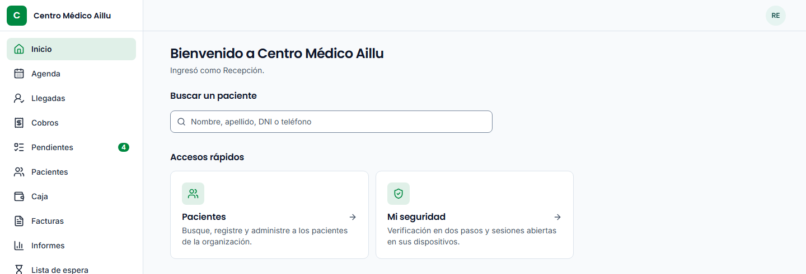
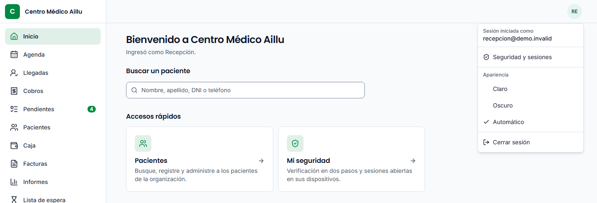
Desde Inicio se busca un paciente por nombre, documento o teléfono. El menú de la cuenta permite abrir Seguridad y sesiones, elegir la Apariencia (claro, oscuro o automático) y Cerrar sesión.
1.5 Qué depende de servicios externos
Algunas funciones necesitan un proveedor fuera de Consulvia. En la organización de demostración todas funcionan con un simulador, y la pantalla lo avisa con un cartel amarillo. Para usarlas en serio, la organización tiene que activar el servicio real.
| Función | Cómo funciona en la demostración | Qué necesita la organización |
|---|---|---|
| Facturas electrónicas | Un simulador de ARCA (antes AFIP). Las facturas son «documentos de prueba sin validez fiscal». | Cargar datos fiscales, un punto de venta y el certificado digital en Configuración, pestaña Facturación, y que el servicio tenga la conexión real con ARCA. |
| Recetas electrónicas | Un simulador del proveedor. Las recetas dicen «Simulada» y no tienen validez legal. | Activar la receta electrónica en Configuración, pestaña Recetas electrónicas, y que la plataforma verifique la matrícula del profesional. |
| Mensajes por correo y WhatsApp | La demostración no envía nada: lo que enviaría queda registrado. | Correo saliente del servicio y, para WhatsApp, activar el envío en Configuración, pestaña Mensajes. |
| Videoconsulta | Un proveedor de salas de prueba. | Salas automáticas activadas en Configuración, pestaña Turnos, o un enlace manual en cada turno. |
| Cobros de pacientes | Se registran a mano (efectivo, débito, crédito, transferencia, billetera virtual, link de pago). | Nada más. Consulvia registra el cobro; no procesa tarjetas por usted. |
2. Primer ingreso
2.1 Iniciar sesión
Quién lo haceTodas las personas del equipo
- Abra la dirección de su organización. Verá la pantalla Iniciar sesión, con el nombre de la organización.
- Escriba su Correo electrónico y su Contraseña. El ojo del campo permite ver lo que escribe.
- Pulse Ingresar.
- Si su cuenta tiene la verificación en dos pasos, aparece una segunda pantalla: escriba el código de 6 dígitos de su aplicación de autenticación y pulse Verificar (sección 2.2).
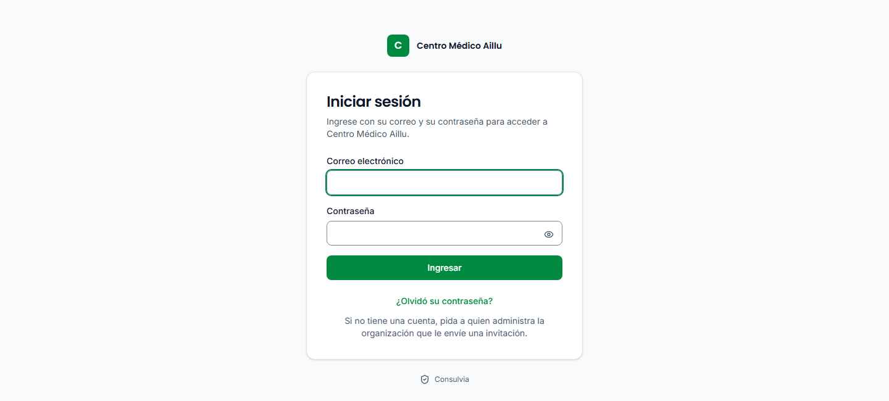
Si el correo o la contraseña no son correctos, Consulvia lo dice sin aclarar cuál de los dos falló. Después de varios intentos fallidos pide esperar un momento antes de volver a intentar. Si su sesión venció por inactividad, vuelve a esta pantalla con el aviso «Su sesión venció» y, al ingresar, lo lleva a donde estaba.
2.2 Verificación en dos pasos (segundo factor)
Además de la contraseña, Consulvia puede pedir un código de 6 dígitos que genera una aplicación en su teléfono (Google Authenticator, Microsoft Authenticator, Authy u otra). Así, una contraseña robada no alcanza para entrar. Para algunos roles es obligatoria: la pantalla de su cuenta lo indica con la etiqueta Obligatoria para su rol.
Mientras no la active, verá en la parte superior de la pantalla el aviso Active la verificación en dos pasos, con la fecha límite. Pasada esa fecha, el acceso queda limitado hasta que la active.
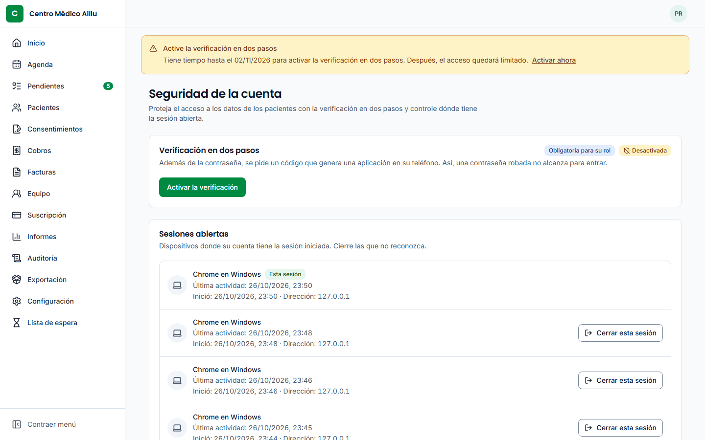
Cómo activarla
- Pulse Activar ahora en el aviso, o abra el menú de la cuenta y elija Seguridad y sesiones.
- Pulse Activar la verificación y confirme su contraseña.
- Escanee el código QR con su aplicación de autenticación. Si no puede escanearlo, escriba a mano la clave que se muestra debajo.
- Escriba el código de 6 dígitos que muestra la aplicación y pulse Confirmar y activar. Si el código no es correcto, verifique que la hora de su teléfono sea la correcta.
- Consulvia muestra los Códigos de recuperación. Cada uno sirve una sola vez y no vuelve a mostrarse: use Copiar los códigos o Descargar como archivo de texto, guárdelos en un lugar seguro y pulse Ya los guardé.
Si pierde el teléfono, en la pantalla del código elija Usar un código de recuperación y escriba uno de los guardados. Más tarde puede usar Cambiar de dispositivo o Generar códigos nuevos (los anteriores dejan de funcionar). Los roles que la tienen obligatoria no pueden desactivarla.
2.3 Olvidé mi contraseña
- En la pantalla de ingreso, pulse ¿Olvidó su contraseña?.
- Escriba su correo electrónico y pulse Enviar instrucciones.
- Revise su bandeja: si existe una cuenta con ese correo, recibirá un enlace para crear una contraseña nueva. El enlace vence a los 30 minutos y sirve una sola vez.
- Abra el enlace, escriba la contraseña nueva y pulse Guardar contraseña.
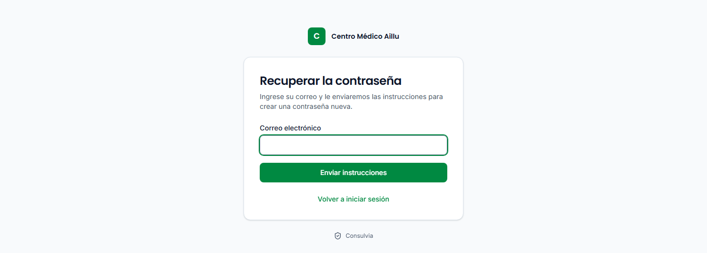
La contraseña debe tener al menos 12 caracteres; una frase larga es una buena opción. Consulvia rechaza las contraseñas muy comunes, las que aparecieron en filtraciones de datos conocidas, las de un solo carácter repetido y las que contienen su correo. Al cambiarla se cierran todas las sesiones que tenía abiertas.
2.4 Si recibió una invitación
Quien administra la organización invita a cada persona desde Equipo (capítulo 8). Usted recibe un correo con un enlace que vence a los 7 días. Al abrirlo aparece Active su cuenta: elija una contraseña y pulse Activar cuenta. Después ingrese como en la sección 2.1. Si el enlace venció, ya se usó o fue cancelado, pida que le envíen otra invitación.
2.5 Primeros pasos de una organización nueva
La primera vez que entra el propietario de una organización nueva, Consulvia abre el asistente de Configuración inicial y deja en el inicio la lista Primeros pasos. Esa lista muestra lo que falta para poder dar el primer turno y se tilda sola a medida que se cargan los datos. Se puede ocultar con Ocultar y volver a abrir desde el menú de la cuenta. El capítulo 8 explica cada paso.
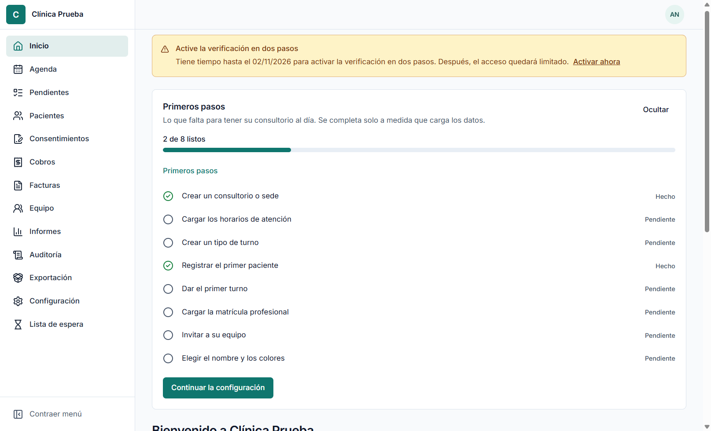
3. Agenda y turnos
La agenda reúne los turnos de todos los profesionales. Es la pantalla de trabajo de la recepción. Los profesionales ven además la pantalla Hoy, con los pacientes del día ordenados por lo que falta hacer (capítulo 5).
3.1 La agenda: vistas y filtros
Quién lo haceRecepciónProfesionalAdministraciónPropietario
Abra Agenda en el menú. Arriba, los botones Día, Semana y Mes cambian el período; las flechas y Hoy se mueven en el tiempo. Cuadrícula muestra las horas en columnas y Lista muestra los turnos en orden, como una lista (en el teléfono se usa siempre la lista).
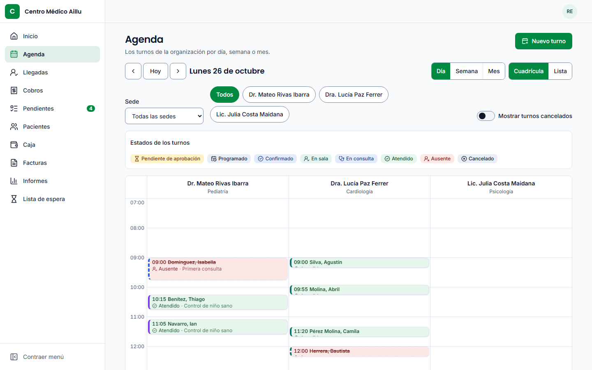
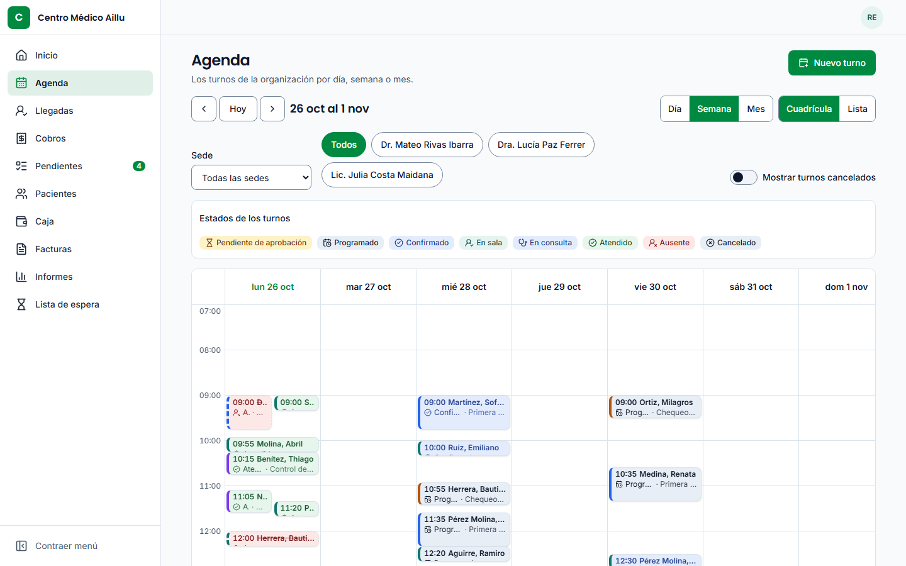
Para acotar lo que ve:
- Sede: elija una sede o Todas las sedes. Cada sede muestra la hora local que le corresponde.
- Los botones con el nombre de cada profesional se activan y se desactivan; Todos los muestra a todos.
- Mostrar turnos cancelados los incluye en la agenda (por defecto no se ven).
Cada turno muestra la hora, el paciente y su estado con un color y un ícono. Las referencias están en Estados de los turnos: Pendiente de aprobación, Programado, Confirmado, En sala, En consulta, Atendido, Ausente y Cancelado. Los feriados y los días cerrados se marcan en la agenda, y los bloqueos aparecen sobre el horario que ocupan.
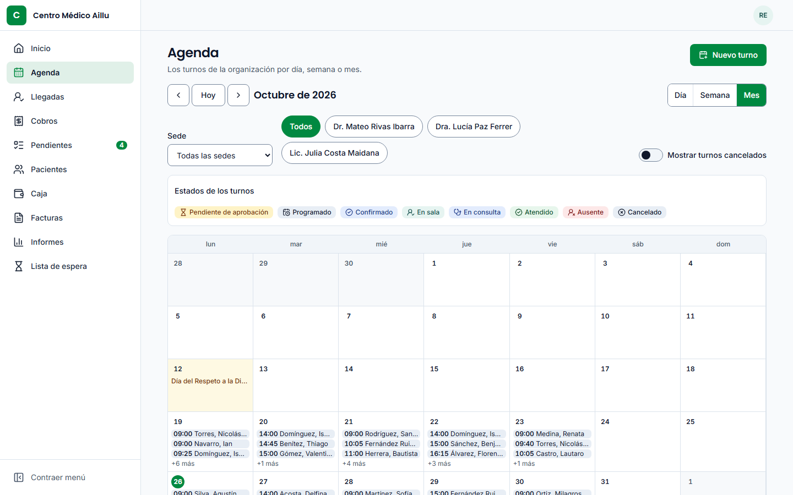
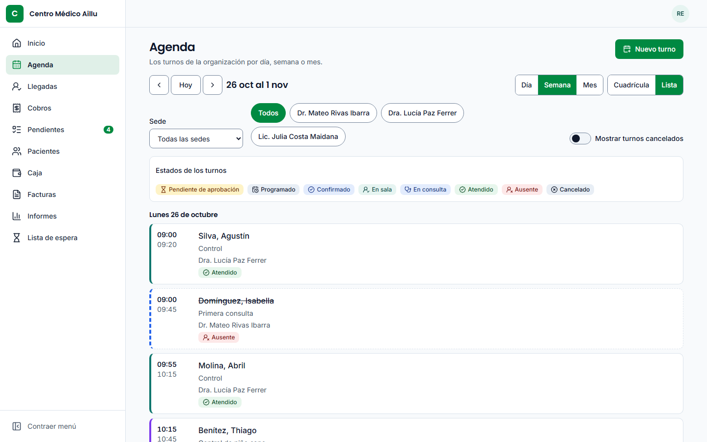
3.2 Cómo dar un turno
Quién lo haceRecepciónAdministraciónPropietarioProfesional
- En Agenda, pulse Nuevo turno.
- En Paciente, escriba el nombre, el apellido, el documento o el teléfono y elija a la persona de la lista. Si todavía no está registrada, use Registrar un paciente nuevo (capítulo 4).
- Elija el Profesional, el Tipo de turno y la Fecha. Los tipos disponibles dependen del profesional y muestran su duración.
- En Horarios disponibles aparecen solo los horarios libres, calculados con el horario de atención del profesional, sus bloqueos y los feriados. Elija uno: debajo se resume el turno.
- Pulse Dar turno. Consulvia avisa «Turno asignado a ... el ...» y el turno aparece en la agenda.
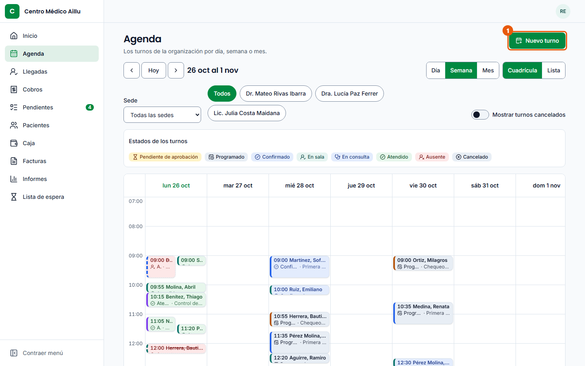
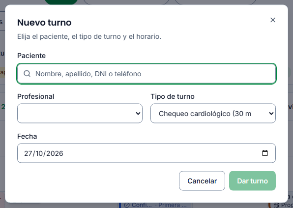
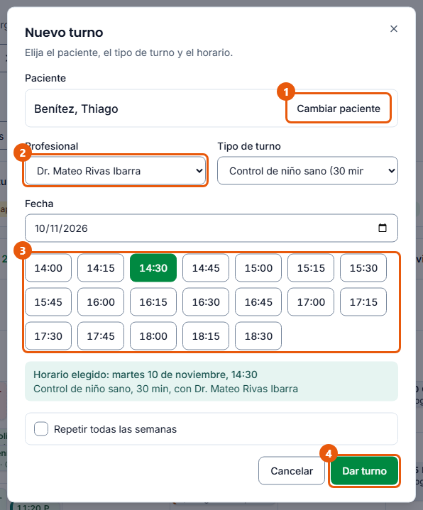
Si el horario ya no está disponible
Si otra persona tomó el horario mientras usted completaba el formulario, Consulvia lo avisa («Ese horario ya no está disponible») y le muestra los próximos horarios libres del profesional.
Turnos fuera de horario o en el pasado
Si necesita dar un turno fuera del horario de atención del profesional, Consulvia lo permite solo a quien tiene el permiso Agendar fuera del horario y pide escribir el Motivo del turno fuera de horario. Cargar una atención que ya ocurrió exige el permiso Registrar turnos pasados. Quien administra el equipo otorga estos permisos (capítulo 8). Si no los tiene, la pantalla se lo dice y ofrece los horarios disponibles.
3.3 Turnos que se repiten (series)
Quién lo haceRecepciónAdministraciónPropietario
Para tratamientos con sesiones periódicas, en el mismo formulario de Nuevo turno tilde Repetir todas las semanas.
- Elija la Frecuencia (todas las semanas o cada cierta cantidad de semanas) y la Cantidad de sesiones.
- Pulse Revisar sesiones. Consulvia muestra una tabla con cada sesión y su estado: Disponible o «No disponible» con el motivo (horario ocupado, fuera del horario de atención, bloqueado, feriado, fecha pasada).
- Las sesiones que no se pueden crear se resuelven con Omitir; también puede Volver a la serie y cambiarla.
- Cuando no quede ninguna sesión sin resolver, pulse el botón de creación, que indica la cantidad (por ejemplo, Crear 4 turnos).
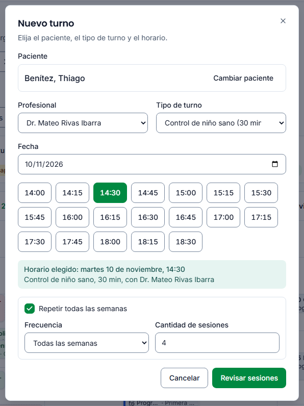
3.4 La ficha del turno y sus acciones
Al hacer clic en un turno de la agenda se abre su ficha en un panel lateral. Arriba figuran el paciente (con el enlace Ver ficha del paciente), el estado, el horario, el profesional, la sede y el tipo de turno. Debajo están las acciones posibles según el estado, el cobro del turno, los mensajes enviados al paciente y el historial de cambios.
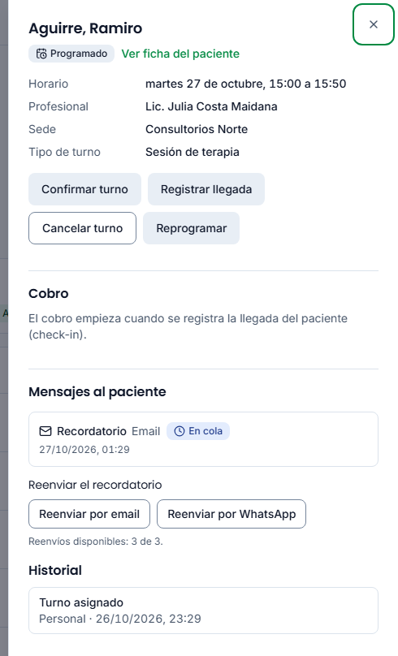
| Estado | Qué se puede hacer |
|---|---|
| Pendiente de aprobación | Aprobar turno (reservas en línea que requieren aprobación de recepción). |
| Programado | Confirmar turno, Registrar llegada, Cancelar turno, Reprogramar. |
| Confirmado | Registrar llegada, Cancelar turno, Reprogramar. |
| En sala | Iniciar consulta y Cancelar turno. Aquí empieza el cobro (capítulo 6). |
| En consulta | Finalizar consulta. |
| Atendido, Ausente | Corregir estado, si se marcó por error. |
Marcar como ausente está disponible cuando ya pasó la hora del turno; antes, Consulvia no lo permite. Si la ficha cambió mientras usted la miraba, avisa y muestra los datos actualizados.
3.5 Confirmar y aprobar un turno
Quién lo haceRecepciónAdministraciónPropietario
Confirmar turno deja registrado que el paciente confirmó su asistencia (el paciente también puede confirmar desde el enlace del recordatorio o desde su portal). Aprobar turno es el paso de las reservas hechas por internet cuando la organización o el tipo de turno exigen aprobación: la reserva queda Pendiente de aprobación y aparece en Pendientes (sección 3.9) hasta que alguien la apruebe.
3.6 Mover o reprogramar un turno
Quién lo haceRecepciónAdministraciónPropietario
Hay tres maneras:
- Arrastrar el turno a otro horario o a otra columna de la cuadrícula. Consulvia lo mueve de inmediato y muestra «Turno movido a las ...» con el botón Deshacer. Si el horario no está libre, el turno vuelve a su lugar y se ofrecen los próximos horarios.
- Con el teclado: seleccione el turno y use la tecla Alt con las flechas.
- Desde la ficha: pulse Reprogramar, elija el Profesional, la Fecha y el horario, y confirme con Reprogramar el turno. Hay que elegir un horario, un profesional o una sede distintos de los actuales.
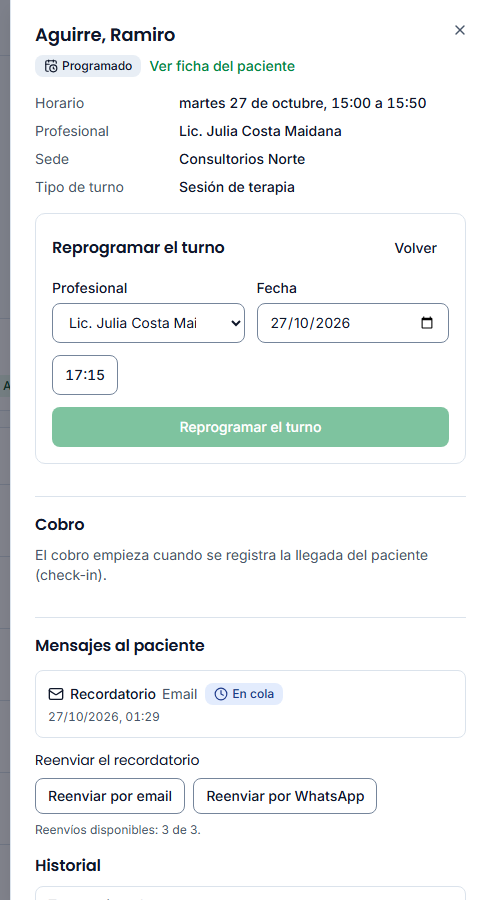
3.7 Cancelar un turno
Quién lo haceRecepciónAdministraciónPropietarioProfesional
- Abra la ficha del turno y pulse Cancelar turno.
- Indique Quién cancela: el paciente, el profesional o la organización.
- Elija el Motivo: lo pidió el paciente, enfermedad, no puede en ese horario, ya no lo necesita, el profesional no está disponible, la organización no atiende ese día, turno duplicado u otro. Si elige «Otro», cuente cuál fue en Detalle.
- Pulse Cancelar el turno. El horario queda libre y el turno se conserva en el historial, marcado como cancelado.
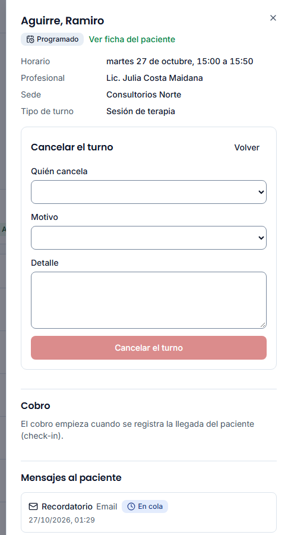
3.8 Registrar la llegada del paciente
Quién lo haceRecepciónAdministraciónPropietario
El mismo día del turno, la recepción registra la llegada. Se puede hacer desde la ficha del turno con Registrar llegada o desde la pantalla Llegadas, que lista los turnos de hoy en cuatro grupos: Por llegar, En sala, En consulta y Terminados. El buscador Buscar entre los turnos de hoy y el filtro de Sede ayudan a encontrar a la persona.
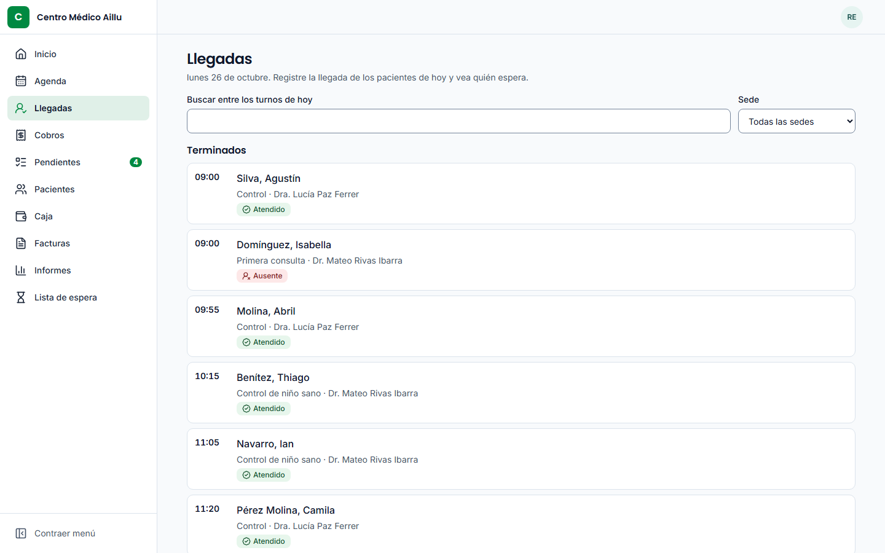
Al registrar la llegada el turno pasa a En sala, el profesional ve al paciente esperando y se habilita el cobro del turno.
Confirmar la identidad
Cuando la reserva se hizo por internet, o los datos del paciente no se verificaron, el turno muestra «La identidad del paciente todavía no fue confirmada». Al pulsar Registrar llegada se abre Llegada del paciente: verifique el documento de identidad, tilde Vi al paciente y su documento de identidad y pulse Confirmar llegada. También puede registrar la llegada sin confirmar la identidad: queda pendiente y aparece en Pendientes.
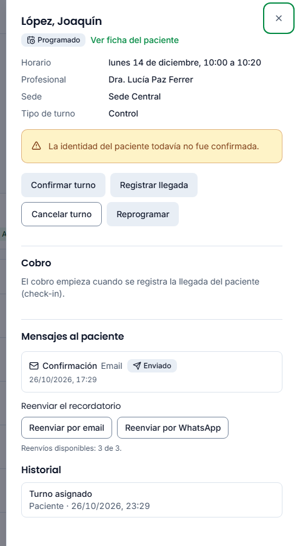
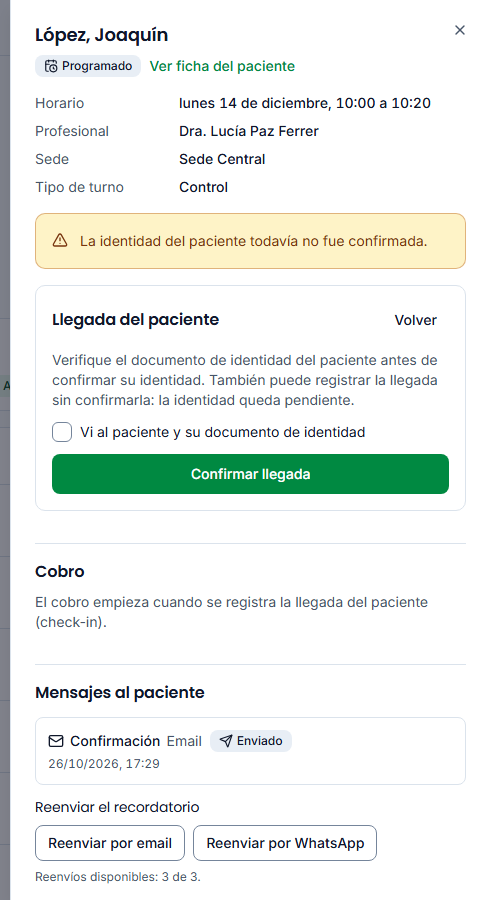
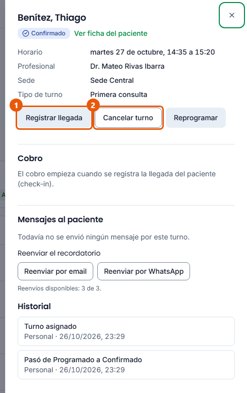
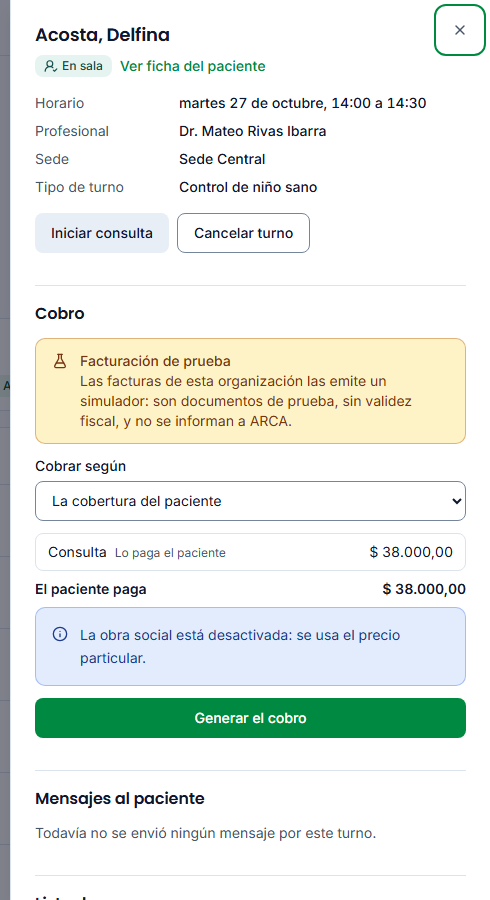
3.9 Pendientes: lo que necesita a una persona de recepción
Quién lo haceRecepciónAdministraciónPropietario
Pendientes reúne en un solo lugar lo que necesita una decisión de recepción. El número verde del menú indica cuántos hay abiertos. Se filtran por Abiertos, Resueltos y Descartados, por Sede y por tipo.
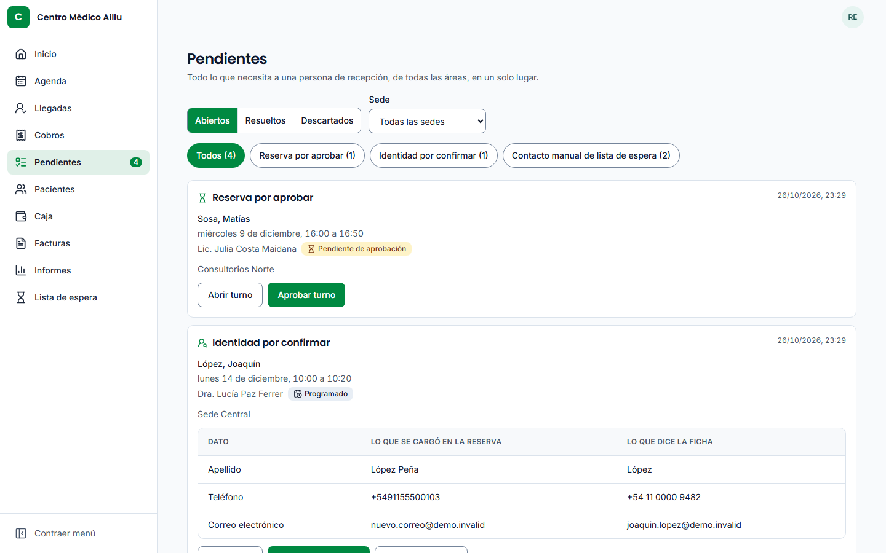
| Tipo de pendiente | Qué hacer |
|---|---|
| Reserva por aprobar | Aprobar turno, o Abrir turno para ver sus datos. |
| Identidad por confirmar | La tabla Diferencias con la ficha compara lo que cargó el paciente en la reserva con lo que dice la ficha. Después de ver el documento: Confirmar identidad. Si la reserva se asoció a la persona equivocada: Corregir paciente (pasar el turno a otro paciente o cancelarlo). |
| Contacto manual de lista de espera | Llamar a la persona. Luego Marcar como resuelto o Descartar. |
| Recordatorio no enviado, Recordatorio no entregado | Avisar al paciente por otro medio. |
| Respuesta por revisar | Alguien respondió BAJA desde un número compartido por varios pacientes: confirme con quién corresponde. |
| Factura para revisar | Ver facturas: una factura quedó en pausa y necesita a una persona (capítulo 6). |
3.10 Lista de espera
Quién lo haceRecepciónProfesionalAdministraciónPropietario
La lista de espera guarda a los pacientes que no encontraron un horario. Cuando se libera uno que les sirve, Consulvia se lo ofrece por correo o WhatsApp, de a una persona por vez. Si no responde, pasa a la siguiente y la persona sigue en la lista.
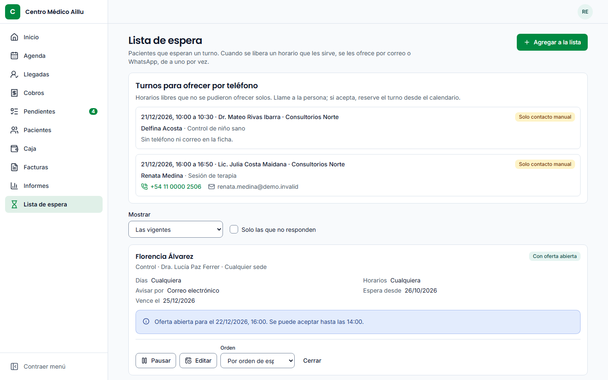
Agregar a alguien a la lista
- Abra Lista de espera y pulse Agregar a la lista.
- Elija el Paciente, el Tipo de turno, el Profesional (o Cualquier profesional) y la Sede.
- Indique cuándo puede venir: Días, Horarios (con atajos Mañana (8 a 12) y Tarde (12 a 18)) y Fechas. Lo que deje sin elegir vale como «cualquiera».
- En Cómo ofrecerle los turnos deje el correo y, si corresponde, WhatsApp. Marque El paciente aceptó recibir ofertas de turnos solo si el paciente se lo dijo: queda registrado con su nombre. Sin esa aceptación no se envían ofertas y la espera queda para llamar por teléfono.
- Pulse Agregar a la lista.
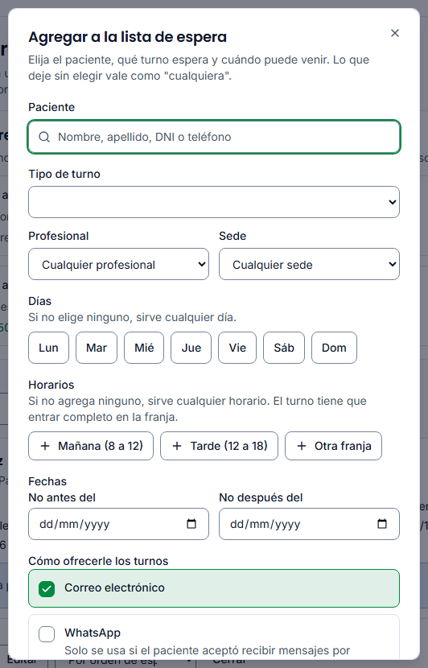
Cada espera muestra su estado (En espera, Con oferta abierta, Pausada o Cerrada) y permite Pausar o Reanudar, Editar y Cerrar (el motivo puede ser que ya se le dio el turno o que ya no lo necesita). El selector Orden permite pasar a alguien Con prioridad o Urgente; el cambio queda registrado. En Turnos para ofrecer por teléfono aparecen los horarios libres que no se pudieron ofrecer por mensaje: llame a la persona y, si acepta, dé el turno desde la agenda.
3.11 Bloqueos, feriados y sobreturnos
Quién lo haceAdministraciónPropietario
Estas tres reglas se configuran en Configuración, pestaña Turnos, que tiene las secciones Tipos de turno, Bloqueos, Feriados y días no laborables y Sobreturnos.
Bloqueos
Un bloqueo es un tiempo en el que no se dan turnos: vacaciones, un congreso, una reunión. Un bloqueo no cancela ni mueve los turnos que ya existen.
- En Bloqueos, pulse Nuevo bloqueo.
- En Para elija Un profesional o Toda una sede y, según corresponda, el profesional o la sede.
- Marque Todo el día o indique Desde las y Hasta las; complete Desde el día y Hasta el día y el Motivo. Los horarios se leen en la zona horaria de la sede.
- Si el bloqueo debe repetirse, tilde Repetir todas las semanas e indique la cantidad de repeticiones.
- Pulse Crear bloqueo. Si hay turnos dentro del bloqueo, Consulvia los lista y pide tildar «Entiendo que estos turnos siguen vigentes hasta que los resuelva desde la agenda»: después hay que mantenerlos, reprogramarlos o cancelarlos uno por uno.
Para quitar un bloqueo use Quitar; si es una serie, elija entre Solo este bloqueo y Toda la serie. Ese tiempo vuelve a poder reservarse.
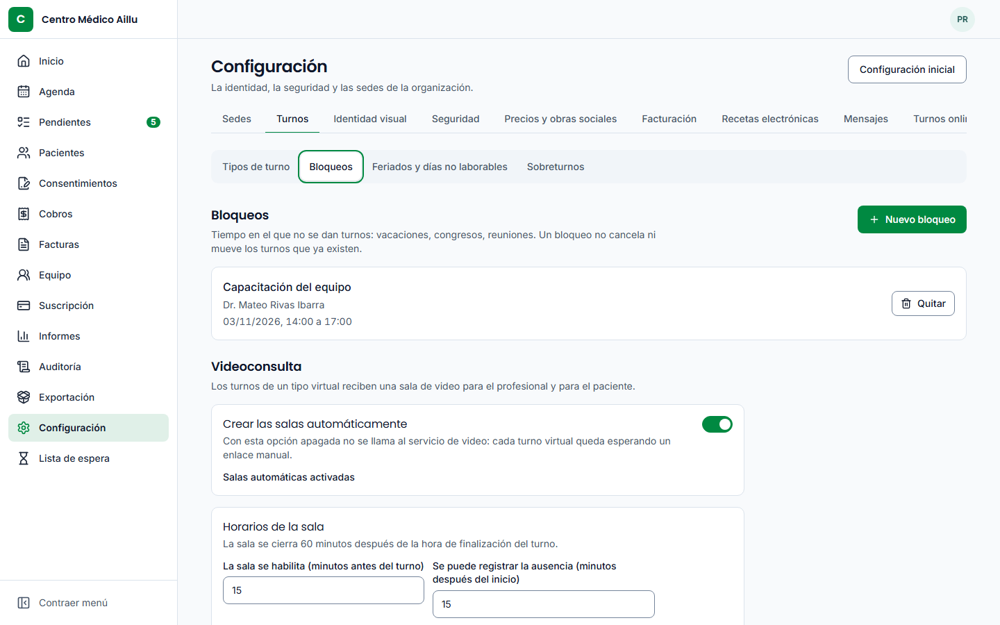
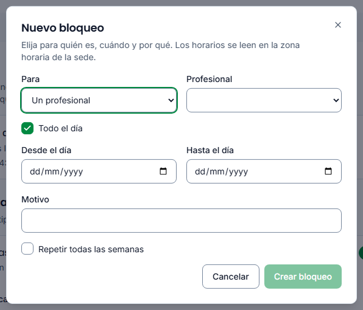
Feriados y días no laborables
Los feriados del país los mantiene la plataforma, sin que haga falta actualizar nada. La organización agrega sus propios días no laborables (por ejemplo, el aniversario de la sede) con Agregar día no laborable, para toda la organización o para una sede. En esos días no se ofrecen turnos. Las flechas Año anterior y Año siguiente cambian de año.
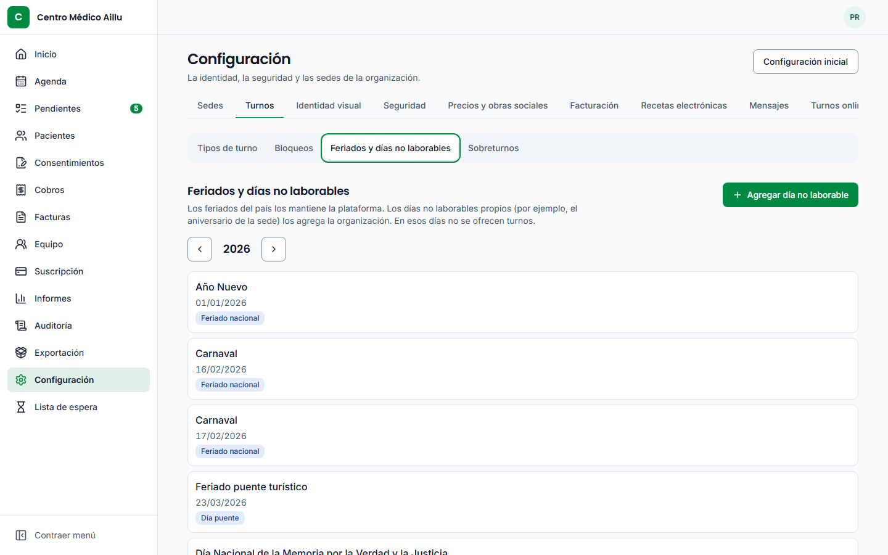
Sobreturnos
Por defecto cada profesional atiende un turno por vez. En Sobreturnos se indica para cada profesional cuántos turnos puede tener al mismo tiempo (de 1 a 20). Con dos o más se admiten turnos superpuestos; Consulvia pide confirmar con «¿Permitir sobreturnos?». Las reservas por internet siguen usando un turno por horario. Para guardar el cambio, primero hay que cargar la disciplina del profesional en su ficha de Equipo.
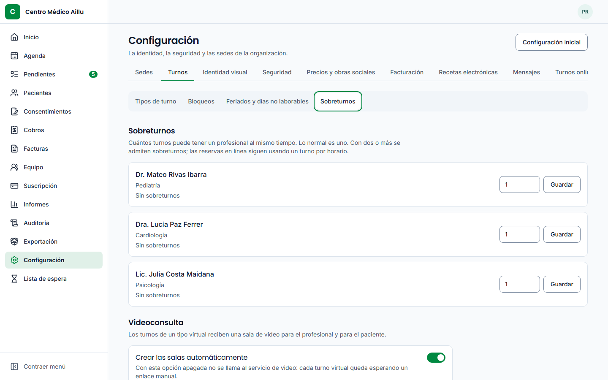
3.12 Videoconsulta
Quién lo haceProfesionalRecepciónAdministraciónPropietario
Los tipos de turno con modalidad Virtual se atienden por videollamada. Esos turnos llevan la marca «Virtual» en la agenda y su ficha incluye el panel Videoconsulta, que indica si el enlace está Listo, si es Manual o si falta.
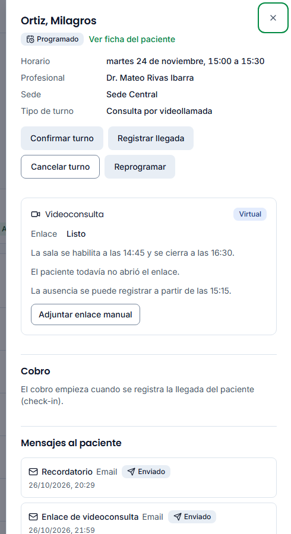
- La sala se habilita unos minutos antes del turno (15 por defecto) y se cierra 60 minutos después de la hora de finalización. El botón Entrar a la videoconsulta aparece solo dentro de ese horario.
- El panel informa si el paciente ya abrió el enlace. Es solo informativo: no cambia el estado del turno.
- Si falta el enlace («Falta el enlace de la videoconsulta»), use Adjuntar enlace manual y pegue la dirección (debe empezar con https:// y ser de un servicio permitido por la plataforma).
La organización decide en Configuración, pestaña Turnos, sección Videoconsulta, si las salas se crean automáticamente y con cuánta anticipación se habilitan. Consulvia no graba ni guarda el audio ni el video: la videollamada la presta un servicio de terceros.
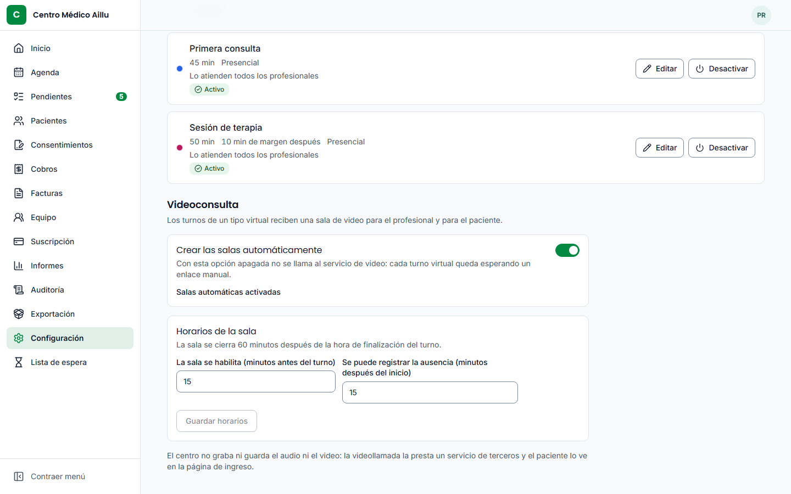
4. Pacientes
El registro de pacientes guarda los datos personales, la cobertura médica, los consentimientos y el historial administrativo de cada persona. Los datos clínicos viven aparte (capítulo 5).
4.1 Buscar un paciente
Quién lo haceRecepciónProfesionalAdministraciónPropietario
Hay dos buscadores: el de Inicio y el de Pacientes. Escriba el nombre, el apellido, el documento o el teléfono (al menos dos letras, o un número de documento). La lista se filtra mientras escribe. Con Mostrar elija Activos, Inactivos o Todos; Ver más pacientes carga más resultados.
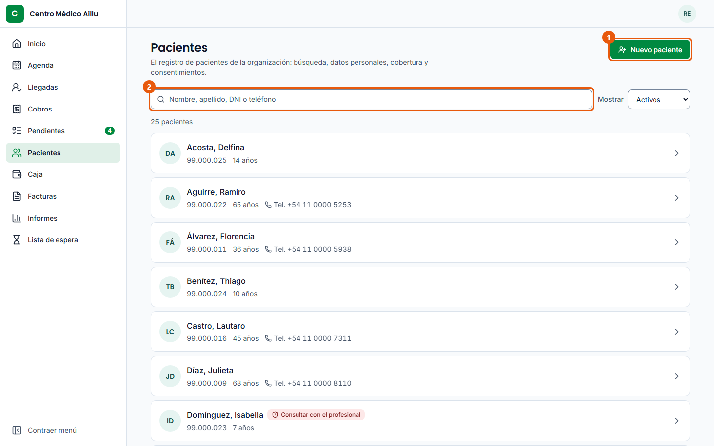
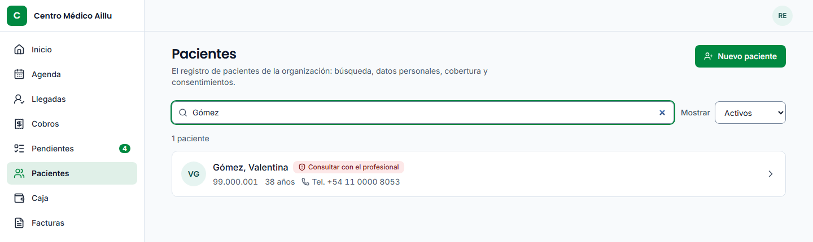
Si no hay resultados, Consulvia sugiere revisar la escritura o probar con el documento y ofrece Limpiar la búsqueda.
4.2 Registrar un paciente
Quién lo haceRecepciónAdministraciónPropietario
- En Pacientes, pulse Nuevo paciente.
- Complete Identidad: Apellido, Nombre y Fecha de nacimiento. Con el nombre y la fecha de nacimiento alcanza para registrarlo; el resto puede completarse después.
- Elija el Documento (DNI, Pasaporte o Sin documento) y escriba el Número de documento. El DNI lleva de 6 a 8 dígitos, con o sin puntos. Un recién nacido o una persona sin documento puede registrarse igual.
- Complete, si los tiene, el Teléfono, el Correo electrónico, el Domicilio y el Contacto de emergencia. Las Notas administrativas son solo para información administrativa (por ejemplo, cómo llegó el paciente): los datos clínicos no van aquí.
- Si el paciente es menor de edad, cargue a la persona adulta a cargo en Representante (nombre, vínculo y un teléfono o un correo). Es un contacto administrativo y no le da acceso a la información.
- En Consentimiento, pregunte al paciente si acepta el tratamiento de sus datos personales (Ley 25.326) y marque la respuesta. Es obligatorio responder. La respuesta queda registrada con la fecha y con quién la tomó.
- Pulse Registrar paciente.
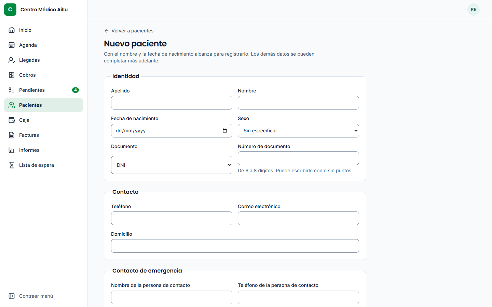
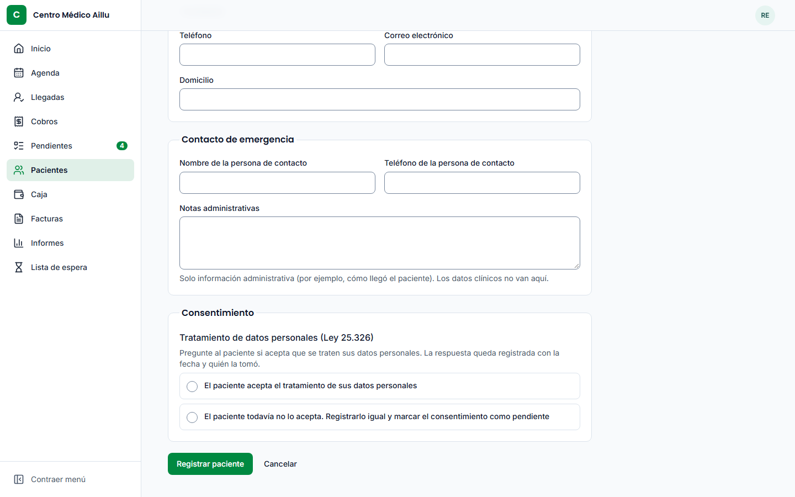
4.3 La ficha del paciente
Al abrir un paciente se ve su ficha. En el encabezado figuran el nombre, la edad, la fecha de nacimiento, el documento y, cuando corresponde, la alerta Consultar con el profesional (sección 4.8). Los botones Editar datos y Desactivar están a la derecha. Debajo hay pestañas, que varían según el rol:
| Pestaña | Qué contiene | Quién la ve |
|---|---|---|
| Datos | Datos personales, contacto y notas administrativas. | Todos |
| Cobertura | Obra social, prepaga o atención particular. | Todos |
| Privacidad | Consentimiento de datos y derechos sobre los datos. | Todos |
| Historial | Cada modificación de los datos personales, con el valor anterior. | Todos |
| Atención | Profesionales a cargo del paciente. | Todos |
| Documentos | Estudios, informes y papeles (capítulo 5). | Todos (los clínicos, solo profesionales) |
| Historia clínica, Anamnesis | Consultas firmadas y antecedentes (capítulo 5). | Solo profesionales |
| Accesos | Quién consultó o modificó los datos de la ficha. El registro nunca incluye el contenido. | Administración, propietario |
| Cobros | Los cobros de ese paciente. | Recepción, profesionales, administración |
| Mensajes | Canales de contacto y avisos. | Todos |
| Recetas | Recetas electrónicas del paciente (capítulo 5). | Solo profesionales |
| Consentimientos | Consentimientos informados solicitados y firmados. | Todos |
| Portal | Quién puede entrar al portal para ver esta ficha (capítulo 9). | Recepción, administración |
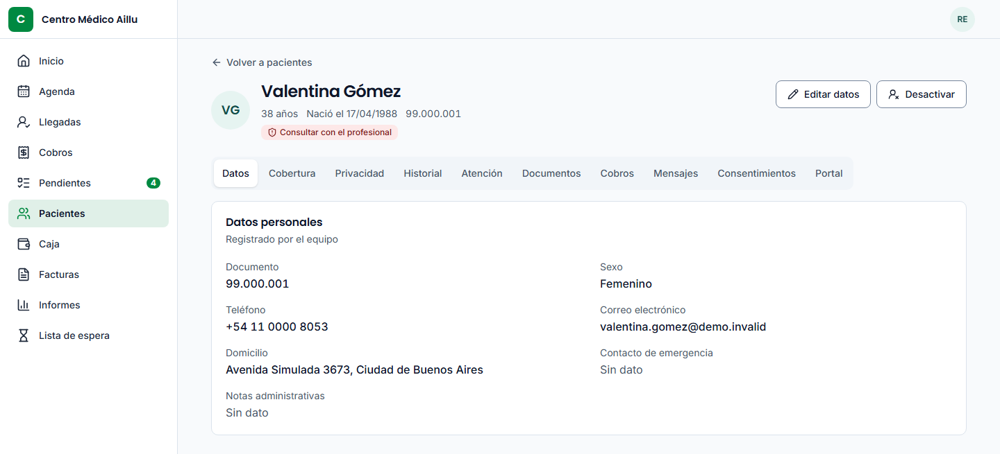
Editar datos abre el formulario con los datos actuales. Cada cambio queda registrado en Historial. Si otra persona modificó la ficha mientras usted la editaba, Consulvia avisa y pide Actualizar la ficha antes de seguir.
4.4 Cobertura médica
Quién lo haceRecepciónAdministraciónPropietario
- Abra la ficha y elija la pestaña Cobertura.
- Pulse Agregar cobertura.
- Elija la Cobertura de la lista y escriba el Número de afiliado (se pide para todas menos Particular). Indique, si corresponde, hasta cuándo está Vigente hasta.
- Si es la que se usará por defecto, tilde Usar como cobertura principal. Pulse Guardar cobertura.
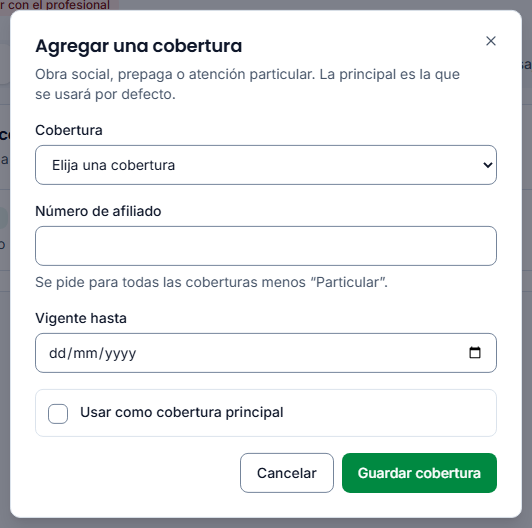
Una cobertura marcada Principal es la que se usa para calcular el cobro de los turnos. Las vencidas aparecen con la etiqueta Vencida. Se puede Hacer principal a otra o quitar una con la cruz. Si la lista de coberturas está vacía, la organización todavía no habilitó ninguna: se habilitan en Configuración, pestaña Precios y obras sociales (capítulo 6).
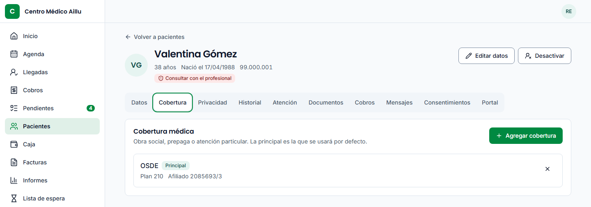
4.5 Privacidad y derechos sobre los datos
La pestaña Privacidad muestra el estado del consentimiento de datos personales (Ley 25.326): Consentimiento otorgado, Consentimiento revocado o Consentimiento pendiente, con la fecha y el historial. Si el paciente lo pide, use Registrar revocación: el historial se conserva y se dejan de enviar mensajes no imprescindibles. Mientras está pendiente, Registrar consentimiento deja constancia de que el paciente aceptó.
En Derechos sobre los datos se registran los pedidos del paciente con Registrar un pedido: Acceso a los datos o Rectificación. Cada pedido queda Abierto hasta que se resuelve con Resolver; para una rectificación, Consulvia abre el formulario de edición con el dato a corregir y conserva el valor anterior en el historial. En un pedido de acceso, Consulvia genera una copia de los datos del paciente que se descarga como archivo JSON (Descargar copia (JSON)); la copia de la historia clínica la entrega un profesional.
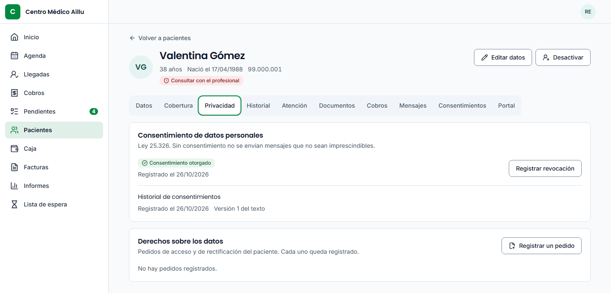
4.6 Profesionales a cargo
Quién lo haceRecepciónAdministraciónPropietario
En Atención se asigna al paciente a uno o más profesionales con Asignar a un profesional. La asignación le permite al profesional registrar la anamnesis y leer su historia aunque todavía no haya un turno. Nadie puede asignarse a sí mismo. Una asignación se quita con la cruz junto al nombre.
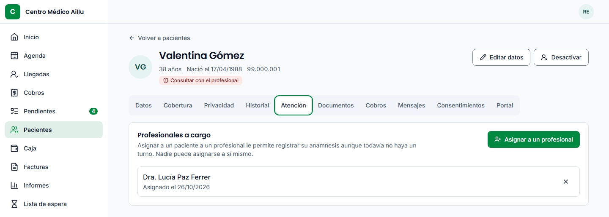
4.7 Mensajes y canales de contacto
Quién lo haceRecepciónAdministraciónPropietario
La pestaña Mensajes muestra por qué canal recibe avisos el paciente, Email y WhatsApp, y desde cuándo. El paciente decide si recibe mensajes. Recepción puede registrar lo que el paciente dice en persona:
- Registrar que acepta WhatsApp (en persona), o Enviar por email el pedido de WhatsApp para que lo acepte desde un enlace.
- Registrar la baja: vale para todos los canales (correo y WhatsApp). Se cancelan los mensajes en cola y se cierran sus lugares en la lista de espera. El paciente pasa a mostrar la etiqueta Sin avisos.
- Volver a activar el canal, solo si el paciente lo pidió. Queda registrado quién lo hizo y cuándo.
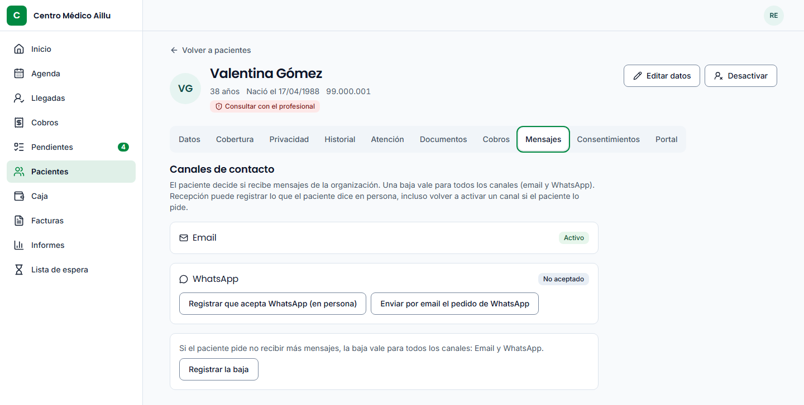
4.8 La alerta «Consultar con el profesional»
Cuando un profesional registra en la anamnesis una situación que requiere cuidado (una alergia grave, un anticoagulante, un embarazo, un dispositivo implantado), la ficha muestra automáticamente la etiqueta Consultar con el profesional. La recepción y la administración ven solo esa etiqueta: nunca el motivo. El propietario puede permitir que la recepción vea que existen datos clínicos (por ejemplo, que hay una nota firmada) en Configuración, pestaña Seguridad; el contenido sigue siendo solo del profesional.
5. Historia clínica, documentos y recetas
Este capítulo es para los profesionales de la salud. Las pantallas se muestran con la cuenta de una cardióloga de la organización de demostración.
5.1 Hoy: los pacientes del día
Quién lo haceProfesional
Hoy lista los turnos del día del profesional, ordenados por lo que falta hacer: Siguiente paciente, En consulta, En sala, Por llegar y Terminados. Arriba figura el Resumen del día con los totales.
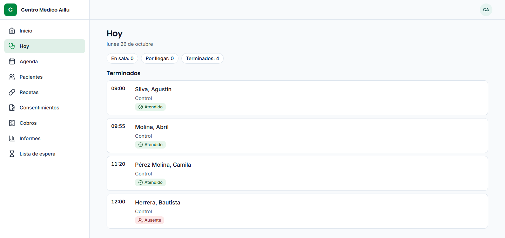
5.2 Cómo atender una consulta
Quién lo haceProfesional
- Cuando el paciente llega, la recepción registra su llegada y el turno pasa a En sala.
- Abra el turno en la agenda o en Hoy y pulse Iniciar consulta. Se abre Nueva consulta con el aviso «Turno: ...»: el motivo de la consulta empieza con ese dato y puede cambiarlo.
- Elija la Plantilla y, si lo necesita, tilde Solo yo puedo leer esta nota. Pulse Empezar la consulta.
- Escriba la nota. Consulvia la guarda sola mientras escribe: en la barra inferior aparece Guardando… y después Guardado. Los campos obligatorios están marcados.
- Cuando termine, pulse Firmar nota. Consulvia pregunta «¿Firmar esta nota?»: confirme con Firmar definitivamente o vuelva con Seguir editando.
- Cierre la visita en la agenda con Finalizar consulta: el turno pasa a Atendido.
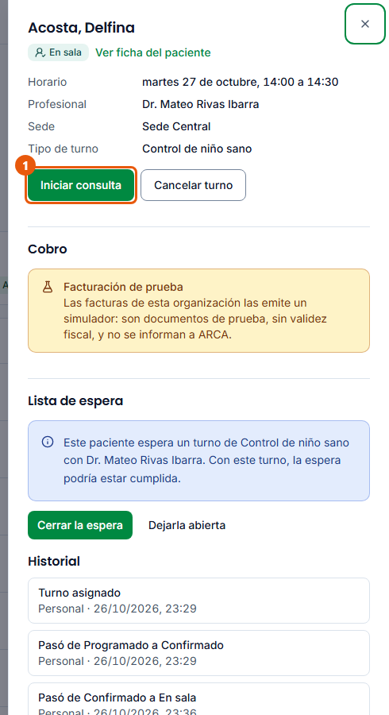
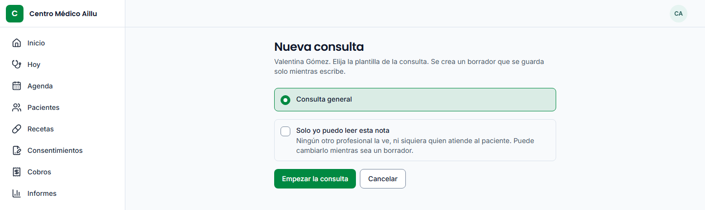
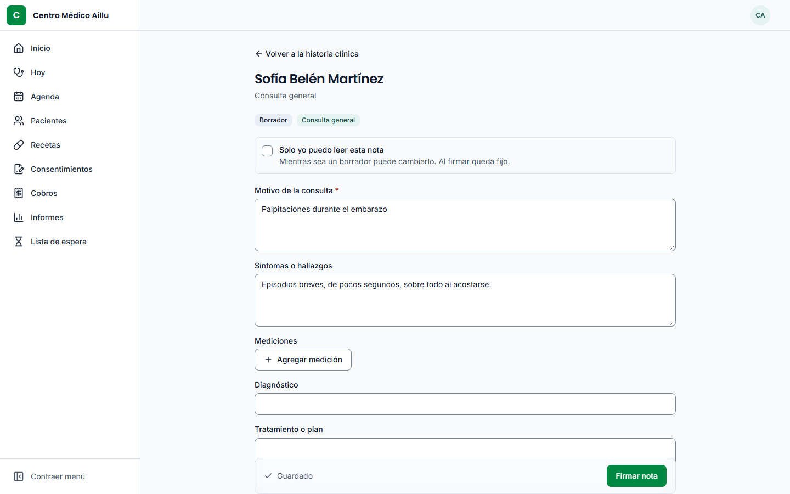
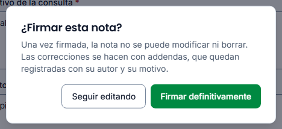
También puede empezar una consulta sin turno: en la ficha del paciente, pestaña Historia clínica, pulse Nueva consulta.
Las plantillas
| Plantilla | Qué incluye |
|---|---|
| Consulta general | Motivo de la consulta, síntomas o hallazgos, mediciones, diagnóstico, tratamiento o plan y medicamentos. |
| Odontología | Odontograma con notación FDI: estado de cada pieza, caras y hallazgos. |
| Psicología | Fecha y modalidad de la sesión, temas abordados, observaciones y valoración de riesgo. Con riesgo medio o alto hay que escribir una nota de seguimiento para firmar. |
| Kinesiología | Intensidad del dolor (0 a 10), región afectada, rango de movimiento, pruebas funcionales, procedimientos y número de sesión. |
| Nutrición | Peso, altura, cintura, hábitos alimentarios, alergias e intolerancias y plan de comidas. El índice de masa corporal se calcula solo. |
Cada profesional usa las plantillas de su especialidad. La organización puede permitir que usen las de otras especialidades en Configuración, pestaña Seguridad, sección Compartir plantillas clínicas.
5.3 Ver la historia clínica de un paciente
Quién lo haceProfesional
Abra la ficha del paciente y elija la pestaña Historia clínica. Muestra las consultas firmadas, de la más reciente a la más antigua, con su plantilla, el profesional, la fecha y el motivo. Abrir muestra la nota completa; Versiones muestra todo lo registrado sobre ella; Ver consultas anteriores trae más. Ver la anamnesis abre los antecedentes.
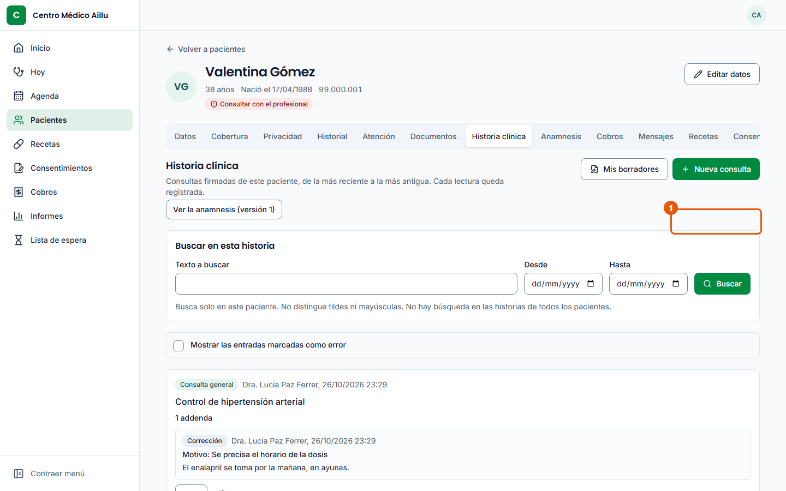
Buscar en esta historia busca un texto solo dentro de este paciente, sin distinguir tildes ni mayúsculas (por ejemplo, «hipertension» encuentra «hipertensión»). Si la historia es muy extensa, hay que indicar un rango de fechas con Desde y Hasta. No existe una búsqueda en las historias de todos los pacientes.
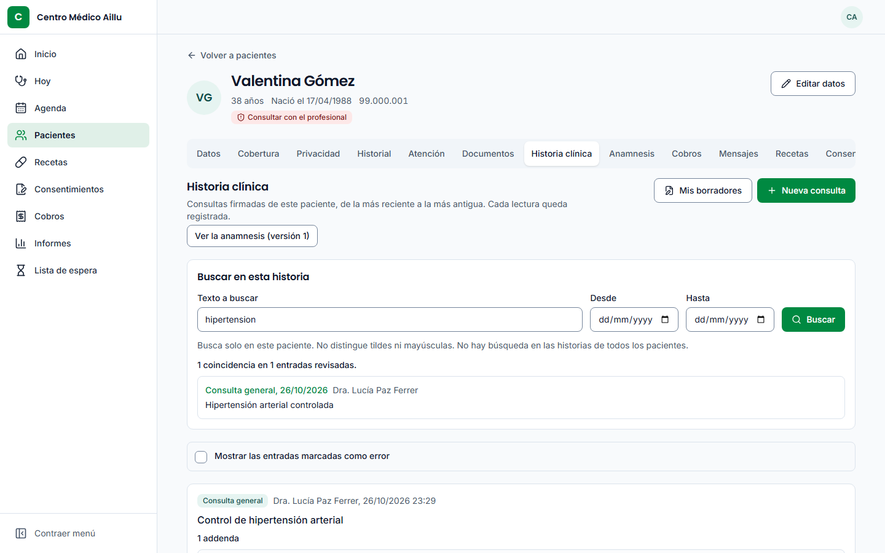
Las notas marcadas como error no figuran en la historia; para verlas, tilde Mostrar las entradas marcadas como error.
5.4 Corregir una nota firmada
Quién lo haceProfesional que atiende al paciente
Una nota firmada no se puede modificar ni borrar. Las correcciones se hacen de dos maneras, desde la nota abierta:
- Agregar addenda: la nota original no cambia y la addenda se muestra a continuación, con su autor, la fecha y el motivo. El Tipo puede ser Corrección o Rectificación pedida por el paciente (un derecho del paciente, Ley 26.529, que se puede agregar incluso si la organización está en solo lectura).
- Marcar como error: para una nota cargada en el paciente equivocado. No se borra: se conserva, queda fuera de la historia y se registra quién la marcó y por qué.
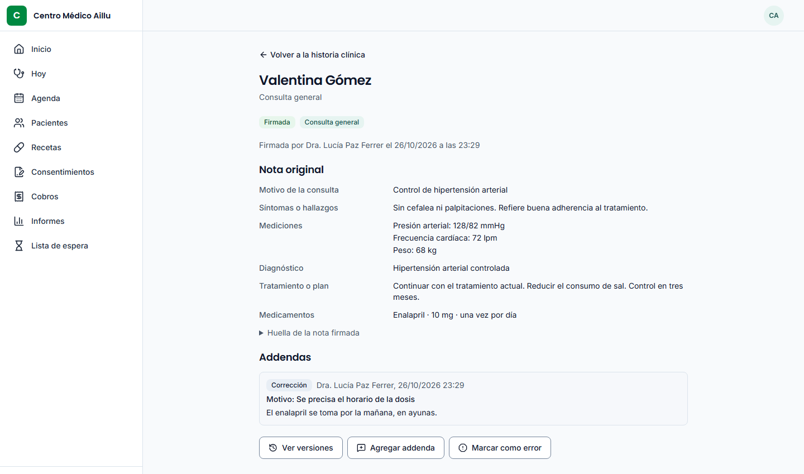
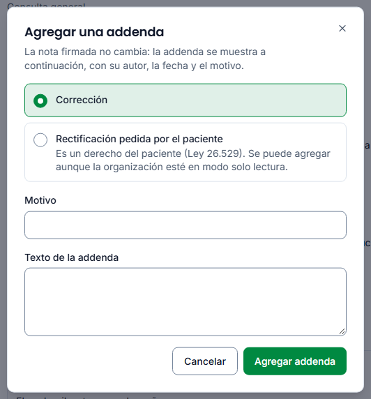
Cada nota firmada tiene una huella (un código que cambia si cambia el contenido), visible en Huella de la nota firmada, que sirve para comprobar que es la que se firmó.
5.5 Borradores
Quién lo haceProfesional
Las notas que empezó y todavía no firmó son borradores: solo las ve su autor. Desde la pestaña Historia clínica, el botón Mis borradores las lista; Continuar reabre el borrador donde lo dejó. Si la nota se guardó desde otra pantalla, Consulvia avisa y ofrece Ver la versión guardada o Conservar mis cambios. Mientras la organización esté en solo lectura, los borradores se pueden leer pero no editar ni firmar.
5.6 Anamnesis
Quién lo haceProfesional
La pestaña Anamnesis guarda los antecedentes del paciente: Alergias (sustancia, reacción y gravedad), Medicación (con la marca Es un anticoagulante), Condiciones y diagnósticos previos y Antecedentes en texto libre. En Situaciones que requieren atención cuidadosa se marcan embarazo, dispositivo implantado o anticoagulado. Según lo que se cargue, Consulvia muestra automáticamente la alerta «consultar con el profesional» en la ficha, y no se puede cambiar a mano. Para guardar use Guardar anamnesis: cada guardado queda con su número de versión.
Para registrar la anamnesis, el paciente tiene que estar asignado al profesional o haber tenido una atención con él.
5.7 Documentos del paciente
Quién lo haceRecepción (administrativos)Profesional (clínicos y administrativos)
La pestaña Documentos guarda estudios, informes y papeles del paciente. Cada archivo se revisa antes de poder descargarse.
- Pulse Subir archivos.
- Elija el Tipo de documento. Define quién puede ver el archivo: los documentos Clínico son solo del equipo de salud y los Administrativo los ve también la recepción. Los clínicos son resultado de laboratorio, estudio por imágenes, derivación, informe clínico y otro documento clínico; los administrativos son copia de documento de identidad, credencial de cobertura, formulario firmado y otro documento administrativo.
- Pulse Elegir archivos (o arrástrelos hasta el recuadro). Se pueden subir hasta 10 archivos por vez, de 20 MB como máximo: PDF, imágenes (JPG, PNG, WebP), texto y Word (DOCX).
- Pulse Subir. Cada archivo aparece como Analizando y, en unos segundos, como Disponible.
Un archivo Rechazado muestra el motivo (por ejemplo, que contiene software malicioso, que el tipo no está permitido o que supera el tamaño máximo) y no se puede descargar. Si sube un archivo igual a uno que ya existe, Consulvia avisa y permite Subir de todos modos o Descartar. Cada documento permite Descargar, subir una Nueva versión (la anterior se conserva) y Ocultar (no se borra: queda guardado con el motivo; se ve con Mostrar documentos ocultos).
5.8 Recetas electrónicas
Quién lo haceProfesional con matrícula verificada
- En la ficha del paciente, abra la pestaña Recetas.
- Pulse Emitir receta.
- Escriba cada medicamento por su nombre genérico (Consulvia sugiere nombres), la Dosis, la Forma farmacéutica, la Cantidad (de 1 a 999) y las Indicaciones. Con Agregar otro medicamento suma más. Los datos del paciente, su cobertura y la fecha se toman solos.
- Pulse Emitir receta. El proveedor confirma y la receta queda Emitida.
Una receta puede estar Emitida, Pendiente de envío (el proveedor no respondió: no es válida hasta que lo confirme; se reintenta sola o con Reintentar ahora), Requiere atención, Rechazada (corríjala con Corregir y reenviar), Anulada (con Anular y un motivo; sigue visible), Dispensada o Vencida. Descargar PDF baja la receta. Registrar a mano sirve para una receta emitida directamente en el sitio del proveedor.
La pantalla Recetas del menú reúne todas las recetas que emitió el profesional.
5.9 Consentimientos informados
Los consentimientos informados tienen plantillas con versiones: cada cambio de una plantilla publicada crea una versión nueva y las firmas anteriores conservan la versión que firmó cada paciente.
Preparar las plantillas
Quién lo haceAdministraciónPropietarioProfesional
- Abra Consentimientos en el menú y pulse Nueva plantilla.
- Escriba el Título y el Texto del consentimiento. Puede Empezar desde un ejemplo; revise y ajuste el texto, porque es un punto de partida y no asesoramiento legal. La Especialidad es opcional.
- Pulse Guardar borrador y, cuando esté lista, Publicar. Una plantilla publicada se puede Editar (se publica una versión nueva), ver con Ver versiones o Retirar para que no se ofrezca más.
Más abajo, Consentimiento que exige cada tipo de turno permite exigir un consentimiento para ciertos tipos de turno: el turno muestra un aviso mientras el paciente no tenga uno firmado y vigente.
Pedir y registrar la firma
Quién lo haceRecepciónProfesionalAdministraciónPropietario
- En la ficha del paciente, pestaña Consentimientos, pulse Solicitar consentimiento.
- Elija la plantilla y Cómo se firma: En persona, en este dispositivo o Desde el portal del paciente (se le avisa por correo y firma desde su portal).
- Si es en persona, entregue el dispositivo al paciente: tiene que leer el texto completo, tildar «Leí el texto completo y acepto este consentimiento», dejar la firma (dibujada con el dedo o el mouse, o escribiendo el nombre) y pulsar Firmar consentimiento. Si el paciente es menor, firma su representante legal con su nombre, documento y vínculo.
- Si el paciente no firma, use El paciente no firma para dejarlo registrado.
Con Ver registro firmado se abre el texto que firmó el paciente, con la constancia, la huella de la firma (que indica si el registro fue alterado) y Descargar PDF. Si el paciente revoca el consentimiento, use Registrar revocación: se guarda como un registro nuevo, con la fecha y su usuario; la firma original no se borra.
6. Facturación y cobros
Consulvia lleva el cobro de cada turno desde el momento en que el paciente llega: calcula el precio, registra los pagos, controla la caja y permite emitir facturas electrónicas. Cada parte se explica en una sección.
| Paso | Dónde | Quién |
|---|---|---|
| 1. Cargar precios y obras sociales (una vez) | Configuración > Precios y obras sociales | Administración, Propietario |
| 2. Registrar la llegada y generar el cobro | Ficha del turno | Recepción |
| 3. Registrar el pago | Cobros | Recepción |
| 4. Abrir y cerrar la caja de la sede | Caja | Recepción |
| 5. Emitir la factura | Facturas | Recepción, Administración, Propietario |
6.1 Precios y obras sociales
Quién lo haceAdministraciónPropietario
En Configuración, pestaña Precios y obras sociales, se cargan tres cosas:
- Obras sociales y prepagas: las que atiende la organización. Cada una puede estar Activa o Desactivada. Para facturarle a una obra social hace falta su CUIT: Cargar CUIT lo controla con el dígito verificador. Se agregan con Agregar una obra social, eligiendo del listado o escribiendo el nombre.
- Precios particulares: cuánto cuesta cada tipo de turno, con la fecha desde la que vale (Vale desde). Los precios anteriores se conservan.
- Lo que paga cada obra social: para cada obra social (y, opcionalmente, cada plan), cuánto cubre, el copago del paciente y el plus.
6.2 Generar el cobro de un turno
Quién lo haceRecepciónAdministraciónPropietario
El cobro empieza cuando se registra la llegada. Con el turno En sala, abra su ficha: en el panel Cobro elija Cobrar según La cobertura del paciente o Particular (precio sin cobertura). Debajo se ven las líneas y El paciente paga. Pulse Generar el cobro.
- Con cobertura, el cobro separa lo que paga el paciente (copago y plus) de lo que paga la obra social. Lo que debe la obra social se cobra aparte: un pago del paciente no lo reduce.
- Si no hay precio cargado, Consulvia pide Importe a cobrar y lo registra como importe manual.
- Si el turno terminó sin atención, Cobrar el cargo por ausencia o cancelación genera el cargo, si la organización lo cobra. El cobro queda marcado Para revisar: el sistema no anula ni devuelve nada solo.
6.3 Los cobros del período
Quién lo haceRecepciónProfesional (sus turnos)AdministraciónPropietario
Cobros lista los cobros del período (abre en el día de hoy; amplíe Desde y Hasta para ver más). Se filtra por Estado: Pendiente, Pago parcial, Pagado o Anulado, y con Solo los que hay que revisar. Cada cobro muestra el paciente, el turno, el total y lo que falta cobrar. Ver cobro de ... abre el detalle.
El detalle muestra los conceptos (Consulta, Cobertura de la obra social, Copago, Plus y, si corresponde, un cargo por ausencia) y los totales: Total, Paga el paciente, Debe la obra social, Cobrado y Falta cobrar. Agregar concepto suma algo más que se debe (material, un estudio); un concepto agregado no se edita después.
6.4 Registrar un pago
Quién lo haceRecepciónAdministraciónPropietario
- Abra el cobro y pulse Registrar pago.
- Elija el Medio de pago: Efectivo, Débito, Crédito, Transferencia, Billetera virtual o Link de pago.
- Revise el Importe (se propone lo que falta cobrar) y, si quiere, escriba el Número de comprobante (opcional): un voucher o el número de la transferencia. No escriba el número de la tarjeta.
- Pulse Registrar pago.
- Si el pago es mayor que lo que se debe, Consulvia lo avisa y pide confirmar que la diferencia queda como Saldo a favor del paciente.
- Un pago en efectivo necesita la caja de la sede abierta: si está cerrada, Consulvia ofrece Abrir la caja de la sede.
- Si repite un número de comprobante, pide escribir el motivo: queda anotado.
6.5 Devolver, corregir y anular
Quién lo haceAdministraciónPropietario
Estas acciones aparecen en el detalle del cobro solo para el propietario y la administración. La recepción las ve explicadas pero no puede usarlas.
- Devolver un pago: indique el importe (hasta lo pagado) y el motivo. El pago original no se modifica: la devolución queda como un movimiento aparte.
- Corregir un pago: se revierte lo que queda del pago y se registra el importe correcto como un pago nuevo, en la caja que está abierta. La caja ya cerrada no cambia.
- Anular cobro: el cobro queda visible, marcado como anulado, con su motivo. Si tiene pagos, hay que devolverlos antes; si tiene una factura emitida, hay que hacerle una nota de crédito.
6.6 Lo que deben las obras sociales y las exportaciones
En Cobros, la pestaña A cobrar a obras sociales suma, por obra social, lo que le corresponde pagar por los cobros del período con cobertura que no están anulados. La pestaña Exportar arma un archivo: elija Qué exportar (Cobros, Pagos y devoluciones o Liquidación a obras sociales y prepagas) y el Formato (CSV (planilla de texto), Excel (xlsx) o PDF para imprimir); pulse Pedir la exportación y, cuando está listo, Descargar.
6.7 La caja de la sede
Quién lo haceRecepciónCualquier persona con el permiso Operar la caja
Hay una caja por sede y por día. En Caja elija la Sede:
- Al empezar el día, pulse Abrir caja e indique el Efectivo con el que empieza (puede ser cero).
- Durante el día, cada pago registrado en esa sede aparece en Movimientos, junto con las devoluciones.
- Al terminar, pulse Cerrar caja, cuente el efectivo y escriba el Efectivo contado. Consulvia compara con el Efectivo que debería haber: si no coincide, muestra cuánto falta o sobra y pide el Motivo de la diferencia.
- Pulse Cerrar caja. La caja cerrada pasa a Cajas anteriores.
6.8 Facturas electrónicas
Quién lo haceRecepciónAdministraciónPropietario
Facturas reúne las facturas y notas de crédito de la organización: lo pedido, lo pendiente, lo emitido y lo registrado a mano. Cada comprobante muestra su número, a quién se emitió, el estado (Pendiente, Emitida, Rechazada o Registrada a mano) y el importe.
Cómo emitir una factura
- Abra Facturas y la pestaña Cobros por facturar: lista los cobros pagados que todavía no tienen factura.
- Pulse Facturar el cobro de ... (o use Facturar en el detalle del cobro).
- En Qué se factura verá los conceptos con su importe: se puede facturar todo o una parte. Si el cobro tiene parte de obra social, A quién se factura permite elegir Al paciente o a la obra social.
- Indique la Condición frente al IVA del receptor (por defecto Consumidor final) y, si quiere, el nombre y el documento. Consulvia indica qué comprobante se emitirá, por ejemplo «Se emitirá una Factura C».
- Pulse Pedir la factura.
Si ARCA tarda en responder, la factura queda Pendiente con el texto «Todavía no se emitió», y se emite sola cuando el servicio se recupera: no hace falta volver a pedirla. Pasado un plazo (24 horas por defecto) aparece la marca Demora prolongada. Si ARCA rechaza una factura, el detalle muestra el motivo y permite Corregir y reintentar.
El detalle de un comprobante
Ver detalle muestra la fecha de emisión, el CAE y su vencimiento, el receptor, el motivo y los conceptos. Descargar PDF baja el comprobante (el PDF se prepara unos segundos después de emitirse).
Notas de crédito y facturas emitidas por fuera
Quién lo haceAdministraciónPropietario
- Emitir nota de crédito anula, en todo o en parte, una factura: elija Todo lo que queda o Una parte, escriba el Motivo (obligatorio, sin datos clínicos) y confirme. La factura original no se modifica.
- Registrar factura emitida por fuera sirve para una factura que se emitió en el sitio de ARCA mientras el servicio no estaba disponible: copie el punto de venta, el número y el CAE tal como figuran. Una vez guardada no se puede modificar.
6.9 Preparar la facturación
Quién lo haceAdministraciónPropietario
En Configuración, pestaña Facturación, se completan los datos con los que se emiten las facturas. El recuadro Estado de la facturación dice si ya se pueden emitir facturas o qué falta.
- Active Emitir facturas electrónicas.
- En Datos fiscales, cargue el CUIT (se valida el dígito verificador), la Condición frente al IVA (monotributo, responsable inscripto o exento), la Razón social, el Domicilio fiscal y el Inicio de actividades. Pulse Guardar datos fiscales.
- En Puntos de venta, agregue al menos un punto de venta (entre 1 y 99999) y elija su ambiente: Producción u Homologación (prueba).
- En Certificado digital, cargue el certificado (.crt o .pem) y la clave privada (.key o .pem, sin contraseña). Se verifican contra el CUIT, se guardan cifrados y no vuelven a mostrarse. Consulvia avisa cuando el certificado está por vencer.
7. Informes
Informes responde a la pregunta «cómo viene la atención». Muestra turnos, ausencias, ocupación, dinero y caja. Solo contiene datos administrativos: nunca hay contenido clínico.
Quién lo hacePropietarioAdministraciónRecepciónProfesional
Lo que ve cada persona depende de su rol y se indica en Filtros aplicados:
- Propietario y administración: toda la organización.
- Recepción: las sedes en las que trabaja. No ve los ingresos por profesional.
- Profesional: solo sus propios turnos y el dinero de sus propios turnos. No tiene el informe de caja.
7.1 Elegir el período y los filtros
Arriba hay tres pestañas: Turnos, Dinero y Caja. En todas se elige el período con Desde y Hasta (hay un máximo de días por consulta) y se acota por Sede; según el informe, también por Profesional, Especialidad u Obra social o prepaga. Pulse Aplicar filtros. Debajo se repiten los filtros aplicados y la fecha y hora en que se generó el informe.
7.2 Informe de turnos
Muestra el Resumen del período:
| Indicador | Qué mide |
|---|---|
| Turnos | Los turnos cuyo día cae en el período, en la zona horaria de cada sede. |
| Ausentismo | Ausentes ÷ (atendidos + ausentes). Los cancelados y los turnos sin estado final no cuentan. |
| Ocupación | Horas reservadas sobre las horas disponibles según los horarios de atención. |
| Reservas en línea | Cuántos turnos los reservó el propio paciente por internet. |
| Turnos recuperados con la lista de espera | Ofertas aceptadas que se convirtieron en turno. |
| Turnos reprogramados | Movidos al menos una vez. |
| Pacientes nuevos, Pacientes que vuelven | Sin turnos anteriores en la organización, o con turnos anteriores. |
| Confirmados por el paciente | Qué parte de los turnos no cancelados confirmó el paciente. |
Más abajo hay gráficos (Turnos por estado, Turnos por día o Turnos por mes) y el Detalle por sede, profesional y especialidad. Cada gráfico tiene su versión en Tabla. Turnos del período lista los turnos con el nombre del paciente; como muestra datos de personas, mirar esa lista queda registrado en la auditoría. Si hay turnos pasados sin estado final, el informe sugiere marcarlos como atendidos o ausentes.
7.3 Informe de dinero
Reúne cargos, cobros, saldos, deudas de obras sociales y comprobantes. Cada cifra se cuenta por su propia fecha: los cargos y los saldos por el día del servicio, los cobros por el día en que entró o salió la plata, y los comprobantes por la fecha impresa. Los indicadores son Cargos, Cargos anulados, Cobrado, Falta cobrar al paciente, A cobrar a obras sociales y Facturado neto. Cada cifra se abre con Ver detalle en los registros que la forman, y el informe incluye el Detalle por sede, profesional, obra social y tipo.
7.4 Informe de caja
Por sede y por día muestra la apertura, los cobros por medio de pago, las devoluciones, el efectivo esperado, el efectivo contado y la diferencia con su motivo. Una diferencia negativa es efectivo que falta. Cada caja cuenta en el día en que se abrió, aunque se cierre más tarde.
7.5 Exportar un informe
Cada informe se puede exportar con Exportar a CSV, Exportar a Excel o Exportar a PDF. El archivo se arma con los filtros aplicados, lleva la fecha y la hora de generación y solo incluye lo que usted puede ver en pantalla. Si el período tiene demasiados movimientos para un solo archivo, Consulvia pide elegir un período más corto.
8. Configuración
Este capítulo es para quien administra la organización (propietario y administración). Reúne todo lo que se configura una vez y se cambia pocas veces.
| Dónde | Qué se configura | Sección |
|---|---|---|
| Configuración > Sedes | Los lugares de atención y su zona horaria. | 8.1 |
| Configuración > Turnos | Tipos de turno, bloqueos, feriados, sobreturnos y videoconsulta. | 8.2 y 3.11 |
| Equipo | Personas, roles, permisos, perfil profesional, sedes y horarios. | 8.3 |
| Configuración > Identidad visual | Nombre, color, logo y estilo. | 8.4 |
| Configuración > Seguridad | Reglas de seguridad y privacidad de toda la organización. | 8.5 |
| Configuración > Mensajes | Recordatorios y avisos a pacientes. | 8.6 |
| Configuración > Turnos online | Enlaces y reglas de las reservas por internet. | 9.1 |
| Configuración > Precios y obras sociales, Facturación | Cobros y facturas. | 6.1 y 6.9 |
| Configuración > Recetas electrónicas | La conexión con el proveedor de recetas. | 5.8 |
| Auditoría, Suscripción, Exportación | Control de accesos, plan y baja de la organización. | 8.7 y 8.8 |
8.1 Sedes
Quién lo haceAdministraciónPropietario
Una sede es un lugar donde atiende la organización. Cada una tiene su zona horaria: los turnos y horarios se muestran siempre en la hora local de la sede.
- Abra Configuración; la primera pestaña es Sedes.
- Pulse Agregar sede, escriba el Nombre de la sede y elija la Zona horaria (Argentina tiene una sola hora oficial; se ofrecen las zonas de cada provincia por compatibilidad).
- Pulse Crear sede.
Editar cambia el nombre o la zona horaria. Desactivar deja de ofrecer la sede para turnos y horarios nuevos y conserva todo lo ya registrado; Mostrar sedes desactivadas y Reactivar la recuperan.
8.2 Tipos de turno
Quién lo haceAdministraciónPropietario
Un tipo de turno define qué se puede reservar. Está en Configuración, pestaña Turnos, sección Tipos de turno.
- Pulse Nuevo tipo de turno.
- Escriba el Nombre y, si quiere, una Descripción.
- Indique la Duración (minutos) y el Margen después (minutos): es tiempo extra que el profesional queda ocupado después (preparación o limpieza), sin sumarse a la duración y sin que el paciente lo vea.
- Elija la Modalidad: Presencial o Virtual (videoconsulta).
- Opcionalmente, un Color (opcional) con el formato #RRGGBB, para reconocer el tipo en la agenda; la opción de que las reservas en línea de este tipo requieran aprobación de recepción; y los Profesionales que lo atienden (si no marca ninguno, lo atienden todos).
- Pulse Crear tipo.
Desactivar un tipo deja de ofrecerlo para turnos nuevos; los turnos que ya existen conservan el tipo y sus datos, y puede reactivarlo cuando quiera con Mostrar tipos inactivos.
8.3 Equipo: usuarios, roles y permisos
Quién lo haceAdministraciónPropietario
Equipo lista a las personas de la organización, con su rol, su especialidad, su matrícula y sus sedes. Una administración no puede crear propietarios ni cambiar los suyos.
Invitar a una persona
- Pulse Invitar a una persona.
- Escriba el Correo electrónico y, si quiere, el Nombre para mostrar.
- En Rol, elija uno o más: Propietario, Administración, Profesional o Recepción. Solo se pueden asignar roles del mismo nivel o inferior.
- Pulse Enviar invitación. La persona recibe un correo con un enlace que vence a los 7 días (sección 2.4).
Gestionar a una persona
Gestionar abre un panel con cuatro pestañas:
- Rol: los roles de la persona (Guardar roles) y Desactivar a esta persona. Una persona desactivada no puede ingresar y se cierran sus sesiones; su historial se conserva y se puede reactivar.
- Perfil profesional: nombre completo, Especialidades, jurisdicción y número de matrícula, y Turnos simultáneos. La matrícula es obligatoria para atender como profesional y queda Sin verificar hasta que la plataforma la revise. Sin matrícula registrada no hay acceso clínico.
- Permisos: habilitaciones puntuales sobre el rol: Agendar fuera del horario, Agendar sobre una reserva, Registrar turnos pasados, Manejar la agenda de profesionales, Operar la caja, Administrar pacientes y Configuración inicial. Los permisos clínicos no se pueden otorgar: solo los tienen los profesionales.
- Sedes y horarios: las sedes de la persona (solo verá turnos y agenda de las sedes asignadas) y sus horarios de atención.
Horarios de atención
En Sedes y horarios, después de asignar al menos una sede y completar el perfil profesional, se cargan los horarios por sede, día por día, en la zona horaria de esa sede. Cada día admite varias franjas con Agregar franja (por ejemplo, de 9 a 13 y de 15 a 18). Un día sin franjas figura como Sin atención. Pulse Guardar horarios. Consulvia no admite franjas superpuestas en el mismo día ni horarios que se pisan entre sedes. Los turnos disponibles se calculan a partir de estos horarios.
8.4 Identidad visual
Quién lo haceAdministraciónPropietario
En Identidad visual se define cómo se ve Consulvia para su organización: en la aplicación, en el ingreso y en los correos. Hay Estilos listos para usar y se puede ajustar el Nombre de la organización, el Nombre corto (para el ícono en el teléfono), el Color principal, las Esquinas, la Tipografía de los títulos y el Logo (PNG, JPG o WebP de hasta 512 KB). A la derecha, la Vista previa muestra el resultado. Si el color elegido no se lee bien sobre fondo claro, Consulvia aplica una variante más oscura y lo avisa. Pulse Guardar identidad.
8.5 Seguridad y privacidad
Quién lo hacePropietarioAdministración
En Seguridad están las reglas que valen para toda la organización. Cada cambio queda registrado en la auditoría.
- Exigir la verificación en dos pasos: cada persona del equipo tendrá que activarla; las que no lo hagan en el plazo no podrán usar la aplicación hasta hacerlo.
- Recepción ve que existen datos clínicos: si está activado, la recepción puede ver, por ejemplo, que un paciente tiene una nota firmada, sin leer su contenido. Si no, solo ve la alerta «consultar con el profesional».
- Compartir plantillas clínicas: permite que los profesionales usen las plantillas de otras especialidades. Compartir las de psicología pide una confirmación aparte, porque contienen información especialmente sensible.
- Horario de silencio: los recordatorios y avisos a pacientes no se envían entre las horas indicadas (en la zona horaria de cada sede).
8.6 Mensajes a pacientes
Quién lo haceAdministraciónPropietario
En Mensajes se configuran los recordatorios y confirmaciones de turnos por correo y por WhatsApp:
- Recordatorios: cuántas horas antes del turno se envía cada uno (hasta tres, entre 1 y 336 horas). Sin ninguno, no se envían recordatorios.
- Horario de descanso: los recordatorios y las ofertas no se envían dentro de ese horario; si un recordatorio cae adentro, se pasa al final del horario, siempre que sea antes del turno.
- Qué dicen los mensajes: los mensajes nunca incluyen datos clínicos. Puede además ocultar el nombre del profesional o el tipo de turno.
- WhatsApp: Enviar recordatorios por WhatsApp. Sin WhatsApp, los recordatorios salen solo por correo y los pacientes sin correo quedan en la lista de Pendientes de recepción. Un paciente solo recibe WhatsApp si lo aceptó. Uso de WhatsApp este mes muestra los mensajes enviados por profesional y su cupo.
Desde la ficha de cada turno se puede ver qué mensajes se enviaron, con su estado (En cola, Enviado, Entregado, Leído, Falló o Cancelado) y, hasta 3 veces por turno, reenviar el recordatorio con Reenviar por email o Reenviar por WhatsApp.
8.7 Auditoría
Quién lo hacePropietarioAdministración
Auditoría responde quién accedió a qué información y cuándo. El registro no guarda el contenido de las historias clínicas. Se puede filtrar por Acción, Resultado, fechas y Paciente, y exportar con Exportar CSV o Exportar JSON. La pestaña Accesos de cada paciente muestra solo los eventos de esa ficha.
8.8 Suscripción, exportación y configuración inicial
Quién lo hacePropietario
- Suscripción (solo el propietario) muestra el plan y el estado de la cuenta, el uso de mensajes de WhatsApp y los resúmenes de cada mes. En la organización de demostración dice «Cuenta sin facturación»: no tiene suscripción. En una cuenta con suscripción, Pagar lo adeudado resuelve un pago pendiente; si la cuenta pasa a Solo lectura, se puede consultar y exportar pero no cargar datos nuevos.
- Exportación (solo el propietario) es donde se descarga la información administrativa cuando la organización se da de baja. Cada profesional descarga por separado el paquete clínico de sus propios pacientes.
- Configuración inicial reabre el asistente de la sección 2.5, con los pasos Su perfil, Su consultorio, Días y horarios de atención, Tipo de turno, Su equipo, Identidad visual y Revisar y finalizar. Para quien atiende solo existe la Configuración rápida, que deja todo listo en una pantalla (atención de lunes a viernes de 9 a 17 y turnos de 30 minutos, modificables).
9. Turnos online y portal del paciente
Consulvia ofrece a los pacientes dos puertas de entrada sin necesidad de llamar: la página pública para reservar turnos y el portal del paciente.
9.1 Preparar las reservas por internet
Quién lo haceAdministraciónPropietario
En Configuración, pestaña Turnos online, hay un enlace para toda la organización y un enlace por profesional.
- Enlace de la organización: una página general que lista a los profesionales que tienen su enlace activo, para que el paciente elija.
- Enlaces por profesional: cada profesional puede tener su propia página, con los tipos de turno y las sedes que usted elija con Elegir tipos y sedes. Un enlace nuevo se crea desactivado: recién recibe reservas cuando usted active Recibir reservas.
- Copiar enlace copia la dirección; Mostrar código QR muestra un código para imprimir o mostrar en pantalla.
- Generar un enlace nuevo reemplaza la dirección: la anterior deja de funcionar de inmediato (también la impresa o la de un QR). Los turnos ya reservados no cambian.
Más abajo, Reglas de las reservas (solo las edita quien administra) fija la anticipación mínima en horas, hasta cuántos días adelante se puede reservar, el máximo de reservas por profesional y día, hasta cuántas horas antes el paciente puede cambiar o cancelar, y si Aprobar cada reserva antes de confirmarla. También se puede exigir aprobación solo para ciertos tipos de turno (sección 8.2). Las reservas que exigen aprobación llegan a Pendientes como «Reserva por aprobar».
9.2 Cómo reserva un paciente
El paciente abre el enlace, sin crear una cuenta.
- Elige con quién quiere atenderse (en la página general) y el Tipo de turno y el Lugar.
- Elige el día y el horario. Los horarios se muestran en la hora de la sede. Si no hay horarios que le sirvan, puede Anotarme en la lista de espera.
- Al elegir un horario, Consulvia lo guarda para esa persona durante unos minutos (la pantalla muestra la cuenta regresiva) mientras completa sus datos.
- Completa Sus datos: nombres, apellido, DNI, fecha de nacimiento, correo electrónico, celular (opcional), si quiere recordatorios por WhatsApp, el motivo (opcional, sin datos de salud) y acepta el tratamiento de sus datos. Pulsa Continuar.
- Escribe el código de 6 dígitos que llegó a su correo y pulsa Confirmar el turno. Si no llegó, puede pedir Enviar un código nuevo.
- Ve «Su turno está reservado» (o «Recibimos su pedido de turno», si el consultorio debe aprobarlo), con la fecha, el lugar y las opciones Agregar al calendario y Cambiar o cancelar el turno.
Con Cambiar o cancelar el turno (o con el enlace del correo de confirmación) el paciente puede mover o cancelar su turno hasta el plazo que fijó la organización; después debe comunicarse con el consultorio. Si el paciente puso el DNI de alguien ya registrado, la reserva queda con la identidad pendiente y llega a Pendientes como Identidad por confirmar (sección 3.8).
9.3 El portal del paciente
El portal es una página propia, a la que se entra desde la dirección de la organización seguida de /portal. No usa contraseña: se entra con un código de 6 dígitos que se envía al correo del paciente y vence a los 10 minutos.
- Quien ya tiene acceso escribe su correo y pulsa Enviarme un código.
- La primera vez, elige Activar mi acceso y escribe su DNI y el correo que le dio al consultorio; si coinciden con la ficha, recibe el código en ese correo.
Una vez adentro, el portal tiene siete secciones:
| Sección | Qué puede hacer el paciente |
|---|---|
| Turnos | Ver sus próximos turnos y los anteriores, Confirmar asistencia, Cancelar el turno (hasta el plazo) y Unirme a la videollamada cuando corresponde. |
| Documentos | Descargar los documentos que el consultorio compartió con él. |
| Consentimientos | Leer y firmar los que se le pidieron (Leer y firmar, Firmar el documento), ver los firmados y Revocar mi consentimiento. |
| Recetas | Ver y descargar las recetas electrónicas que le emitieron. |
| Facturas | Descargar las facturas y notas de crédito emitidas a su nombre. |
| Mis datos | Cambiar su teléfono, domicilio y contacto de emergencia; Pedir una corrección de su nombre, DNI o fecha de nacimiento; Pedir una copia de su historia clínica; ver Mis pedidos. |
| Sesiones | Ver los dispositivos con la sesión abierta y cerrar los que no reconozca. |
Menores de edad y representantes
Para un menor, la persona que lo representa entra con su propia cuenta y ve la ficha del menor. Si una cuenta da acceso a más de una ficha, el portal pregunta ¿De quién quiere ver la información?. Cuando el menor llega a la mayoría de edad, el acceso del representante queda en pausa hasta que la propia persona lo autorice desde su cuenta.
Dar acceso al portal desde la ficha
Quién lo haceRecepciónAdministraciónPropietario
En la ficha del paciente, la pestaña Portal muestra quién puede entrar. Invitar al paciente envía un correo con un enlace para activar su acceso. Para un menor, Invitar a un representante pide el correo de la persona, el vínculo y una nota de qué verificó (por ejemplo, el documento y la partida de nacimiento que vio; mínimo 10 caracteres). También se puede Quitar este acceso, Cerrar sus sesiones o Dar de baja la cuenta.
10. Consulvia para Windows
Consulvia para Windows es la versión que se instala en una sola computadora. Funciona completa, sin internet y sin contratar ningún servicio: los datos quedan en esa computadora y en las copias de seguridad que usted guarde. Este capítulo resume la guía de instalación; la versión completa está en el archivo INSTALACION.md de la documentación de Consulvia Desktop.
10.1 Qué necesita
| Requisito | Detalle |
|---|---|
| Sistema operativo | Windows 10 o Windows 11, de 64 bits. |
| Memoria | 4 GB como mínimo, 8 GB recomendados. |
| Espacio en disco | 1,5 GB libres para el programa, más el de sus datos y copias (cada copia pesa lo mismo que los datos). |
| Permisos | Un usuario común de Windows alcanza. No se piden permisos de administrador. |
| Internet | No es necesario. |
10.2 Instalar
- Haga doble clic en Consulvia-Setup-<versión>.exe.
- Si Windows muestra «Windows protegió su PC», es porque el instalador todavía no está firmado digitalmente. Elija Más información y después Ejecutar de todas formas. Haga esto solo con un instalador que le entregó quien le brinda el servicio.
- La instalación es de un solo paso, sin preguntas. Al terminar se crea un acceso directo Consulvia en el escritorio y en el menú Inicio, y Consulvia se abre sola.
Para actualizar, ejecute el instalador de la versión nueva: sus datos se conservan. Si Consulvia está abierto, el instalador le pide que se cierre por sí mismo; no lo cierre desde el Administrador de tareas. Cuando la versión nueva trae cambios en la base de datos, Consulvia hace antes una copia de seguridad previa a la actualización y no actualiza si esa copia no se pudo hacer.
10.3 Primer inicio y la clave de recuperación
La primera vez, Consulvia prepara la base de datos (uno o dos minutos, con el mensaje «Iniciando Consulvia…») y muestra Bienvenido a Consulvia.
- Escriba el nombre del consultorio, su nombre y apellido, su correo electrónico (con él va a ingresar) y la zona horaria.
- Elija una contraseña de al menos 12 caracteres. Una frase larga es una buena opción.
- Pulse Continuar. Todavía no se crea nada: primero se muestra la clave de recuperación.
- La clave de recuperación son 30 letras y números en grupos de cinco. Imprímala o anótela y guárdela en un lugar seguro: es la única vez que Consulvia la muestra.
- Escriba los últimos 4 caracteres de la clave y pulse La guardé: crear mi consultorio. Es la forma de confirmar que la anotó; recién entonces Consulvia crea el consultorio.
- Pulse Abrir Consulvia e ingrese con su correo y su contraseña.
Si cierra la ventana, o se corta la luz, antes de confirmar la clave, no queda nada a medias: el consultorio no se creó y al abrir Consulvia de nuevo empieza otra vez, con una clave nueva. Esa cuenta es la de la propietaria; desde Configuración puede invitar a más personas.
10.4 Uso diario
- Consulvia queda activo junto al reloj de Windows (el icono de Consulvia, a veces dentro de la flecha ^). Cerrar la ventana no cierra Consulvia: sigue funcionando para que los recordatorios continúen. Para cerrarlo por completo, haga clic derecho en el icono y elija Salir.
- Abrir en el navegador abre el mismo Consulvia en Chrome, Edge u otro navegador de esa computadora. Iniciar con Windows hace que arranque solo al encender la computadora (está desactivado hasta que lo marque).
- Apague la computadora después de Salir o con el apagado normal de Windows; evite desenchufarla.
El menú del icono también tiene Correos salientes (la carpeta con los correos que Consulvia generó), Hacer copia de seguridad, Restaurar copia…, Restablecer contraseña de la propietaria…, Ver registros y Acerca de.
10.5 Copias de seguridad
- Consulvia hace una copia automática por día, la primera vez que se abre cada día, y conserva las últimas 14 automáticas y las últimas 14 manuales. Para hacer una copia en cualquier momento: icono de Consulvia, Hacer copia de seguridad.
- Cada copia se comprueba apenas se escribe. Una copia que no pasa la comprobación se descarta y Consulvia avisa. Cuándo fue la última copia buena se ve en el menú del icono y en Acerca de.
- Las copias están en la carpeta Documentos\Consulvia\Copias, con el nombre consulvia-diaria-AAAA-MM-DD_HHMM.cvb (o consulvia-manual-…). Cada una es un solo archivo cifrado que incluye la base de datos y todos los documentos de los pacientes.
- Consulvia se lo recuerda cada 30 días, porque no puede saber si usted ya copió la carpeta a otro lugar.
10.6 Restaurar una copia
- Icono de Consulvia, Restaurar copia…, y elija el archivo .cvb.
- Consulvia muestra de qué fecha y de qué tipo es la copia y si es de esta instalación o de otra, y pide confirmación. Después pide la clave de recuperación de esta instalación (si la copia es de otra instalación hacen falta las dos claves).
- Consulvia hace primero una copia de seguridad de los datos actuales y recién entonces reemplaza todo. Durante unos minutos Consulvia queda sin servicio.
- Al terminar, Consulvia se abre con los datos de la copia.
Para usar una copia en otra computadora (por ejemplo, si la primera se rompió): instale Consulvia y, sin completar la pantalla de bienvenida, abra el icono junto al reloj y elija Restaurar copia…; Consulvia pedirá la clave de recuperación que se mostró en la primera computadora. Sin esa clave la copia no se puede abrir en otra computadora.
10.7 Olvidé la contraseña
- De la propietaria: en esa computadora, icono de Consulvia, Restablecer contraseña de la propietaria…. Pide la clave de recuperación y la contraseña nueva dos veces. Se cierran las sesiones abiertas de esa cuenta y queda registrado en la auditoría.
- De otra persona: en la pantalla de ingreso use ¿Olvidó su contraseña?. Como esta versión no tiene servidor de correo, el mensaje queda guardado en Correos salientes: abra el archivo .eml más reciente con su programa de correo (o el .json que lo acompaña), copie el enlace y envíeselo a la persona.
10.8 Qué no incluye esta versión
- Recetas electrónicas: desactivadas, porque dependen de una consola de plataforma que no existe en la versión de una sola computadora.
- Facturación electrónica con ARCA: las facturas se pueden preparar, pero la conexión real todavía no está disponible.
- Turnos online, portal del paciente y lista de espera fuera de la computadora: los enlaces solo funcionan desde esa misma computadora.
- Videoconsulta, WhatsApp y cobros en línea: desactivados. Los avisos por correo no salen por internet.
- Varias computadoras: esta versión es para una sola y no se sincroniza entre equipos.
10.9 Si algo no funciona
- «Consulvia no pudo iniciar»: pulse Reintentar. Si se repite, elija Ver registros y envíe la carpeta logs a quien le brinda soporte. Los registros pueden contener datos de pacientes: envíelos solo a quien ya confía sus datos.
- «No se pueden leer los datos de esta instalación con la cuenta de Windows actual»: está ingresando con otro usuario de Windows. Cierre la sesión e ingrese con el usuario que instaló Consulvia.
- Si los datos no se pueden abrir (archivo de configuración dañado o falta la base de datos), Consulvia ofrece Empezar de nuevo y restaurar una copia: aparta, sin borrar, los datos actuales y le pide el archivo .cvb.
- El antivirus puede demorar el primer inicio. Si bloquea Consulvia, agregue la carpeta del programa y %LOCALAPPDATA%\Consulvia a las excepciones.
11. Preguntas frecuentes y solución de problemas
Las respuestas están agrupadas por tema. Si el problema persiste, comuníquese con quien administra su organización o le brinda el servicio.